![Circuit system by Steve Putz (age 15), Tangram designs are created by selecting shapes from a 'menu' displayed at the top of the screen. This system was implemented in Smalltalk by a fourteen year old girl [Kay 77]](Images/circuit.png)
original pdf / make corrections
Alan C. Kay
Apple Computer
kay2@apple.com.Internet#
Permission to copy without fee all or part of this material is
granted provided that the copies are not made or distributed for
direct commercial advantage, the ACM copyright notice and the
title of the publication and its date appear, and notice is given
that copying is by permission of the Association for Computing
Machinery. To copy otherwise, or to republish, requires a fee
and/or specific permission.
HOPL-II/4/93/MA, USA
© 1993 ACM 0-89791-571-2/93/0004/0069...$1.50
Most ideas come from previous ideas. The sixties, particularly in the ARPA community, gave rise to a host of notions about "human-computer symbiosis" through interactive time-shared computers, graphics screens and pointing devices. Advanced computer languages were invented to simulate complex systems such as oil refineries and semi-intelligent behavior. The soon-to-follow paradigm shift of modern personal computing, overlapping window interfaces, and object-oriented design came from seeing the work of the sixties as something more than a "better old thing." That is, more than a better way: to do mainframe computing; for end-users to invoke functionality; to make data structures more abstract. Instead the promise of exponential growth in computing/$/volume demanded that the sixties be regarded as "almost a new thing" and to find out what the actual "new things" might be. For example, one would compute with a handheld "Dynabook" in a way that would not be possible on a shared mainframe; millions of potential users meant that the user interface would have to become a learning environment along the lines of Montessori and Bruner; and needs for large scope, reduction in complexity, and end-user literacy would require that data and control structures be done away with in favor of a more biological scheme of protected universal cells interacting only through messages that could mimic any desired behavior.
Early Smalltalk was the first complete realization of these new points of view as parented by its many predecessors in hardware, language and user interface design. It became the exemplar of the new computing, in part, because we were actually trying for a qualitative shift in belief structures—a new Kuhnian paradigm in the same spirit as the invention of the printing press—and thus took highly extreme positions which almost forced these new styles to be invented.
—To Dan Ingalls, Adele Goldberg and the rest of Xerox PARC LRG gang
—To Dave Evens, Bob Barton, Marvin Minsky, and Seymour Papert
—To SKETCHPAD, JOSS, LISP, and SIMULA, the 4 great programming conceptions of the sixties
I'm writing this introduction in an airplane at 35,000 feet. On my lap is a five pound notebook computer—1992's "Interim Dynabook"—by the end of the year it sold for under $700. It has a flat, crisp, high-resolution bitmap screen, overlapping windows, icons, a pointing device, considerable storage and computing capacity, and its best software is object-oriented. It has advanced networking built-in and there are already options for wireless networking. Smalltalk runs on this system, and is one of the main systems I use for my current work with children. In some ways this is more than a Dynabook (quantitatively), and some ways not quite there yet (qualitatively). All in all, pretty much what was in mind during the late sixties.
Smalltalk was part of this larger pursuit of ARPA, and later of Xerox PARC, that I called personal computing. There were so many people involved in each stage from the research communities that the accurate allocation of credit for ideas is intractably difficult. Instead, as Bob Barton liked to quote Goethe, we should "share in the excitement of discovery without vain attempts to claim priority."
I will try to show where most of the influences came from and how they were transformed in the magnetic field formed by the new personal computing metaphor. It was the attitudes as well as the great ideas of the pioneers that helped Smalltalk get invented. Many of the people I admired most at this time—such as Ivan Sutherland, Marvin Minsky, Seymour Papert, Gordon Moore, Bob Barton, Dave Evans, Butler Lampson, Jerome Bruner, and others—seemed to have a splendid sense that their creations, though wonderful by relative standards, were not near to the absolute thresholds that had to be crossed. Small minds try to form religions, the great ones just want better routes up the mountain. Where Newton said he saw further by standing on the shoulders of giants, computer scientists all too often stand on each other's toes. Myopia is still a problem where there are giants' shoulders to stand on—"outsight" is better than insight—but it can be minimized by using glasses whose lenses are highly sensitive to esthetics and criticism.
Programming languages can be categorized in a number of ways: imperative, applicative, logic-based, problem-oriented, etc. But they all seem to be either an "agglutination of features" or a "crystallization of style." COBOL, PL/1, Ada, etc., belong to the first kind; LISP, APL— and Smalltalk—are the second kind. It is probably not an accident that the agglutinative languages all seem to have been instigated by committees, and the crystallization languages by a single person.
Smalltalk's design—and existence—is due to the insight that everything we can describe can be represented by the recursive composition of a single kind of behavioral building block that hides its combination of state and process inside itself and can be dealt with only through the exchange of messages. Philosophically, Smalltalk's objects have much in common with the monads of Leibniz and the notions of 20th century physics and biology. Its way of making objects is quite Platonic in that some of them act as idealizations of concepts—Ideas—from which manifestations can be created. That the Ideas are themselves manifestations (of the Idea-Idea) and that the Idea-Idea is a-kind-of Manifestation-Idea—which is a-kind-of itself, so that the system is completely self-describing— would have been appreciated by Plato as an extremely practical joke [Plato].
In computer terms, Smalltalk is a recursion on the notion of computer itself. Instead of dividing "computer stuff" into things each less strong than the whole—like data structures, procedures, and functions which are the usual paraphernalia of programming languages—each Smalltalk object is a recursion on the entire possibilities of the computer. Thus its semantics are a bit like having thousands and thousands of computers all hooked together by a very fast network. Questions of concrete representation can thus be postponed almost indefinitely because we are mainly concerned that the computers behave appropriately, and are interested in particular strategies only if the results are off or come back too slowly.
Though it has noble ancestors indeed, Smalltalk's contribution is a new design paradigm—which I called object-oriented—for attacking large problems of the professional programmer, and making small ones possible for the novice user. Object-oriented design is a successful attempt to qualitatively improve the efficiency of modeling the ever more complex dynamic systems and user relationships made possible by the silicon explosion.
"We would know what they thought
when they did it."
—Richard Hamming
"Memory and imagination are but two
words for the same thing."
—Thomas Hobbes
In this history I will try to be true to Hamming's request as moderated by Hobbes' observation. I have had difficulty in previous attempts to write about Smalltalk because my emotional involvement has always been centered on personal computing as an amplifier for human reach—rather than programming system design—and we haven't got there yet. Though I was the instigator and original designer of Smalltalk, it has always belonged more to the people who make it work and got it out the door, especially Dan Ingalls and Adele Goldberg. Each of the LRGers contributed in deep and remarkable ways to the project, and I wish there was enough space to do them all justice. But I think all of us would agree that for most of the development of Smalltalk, Dan was the central figure. Programming is at heart a practical art in which real things are built, and a real implementation thus has to exist. In fact many if not most languages are in use today not because they have any real merits but because of their existence on one or more machines, their ability to be bootstrapped, etc. But Dan was far more than a great implementer, he also became more and more of the designer, not just of the language but also of the user interface as Smalltalk moved into the practical world.
Here, I will try to center focus on the events leading up to Smalltalk-72 and its transition to its modern form as Smalltalk-76. Most of the ideas occurred here, and many of the earliest stages of OOP are poorly documented in references almost impossible to find.
This history is too long, but I was amazed at how many people and systems that had an influence appear only as shadows or not at all. I am sorry not to be able to say more about Bob Balzer, Bob Barton, Danny Bobrow, Steve Carr, Wes Clark, Barbara Deutsch, Peter Deutsch, Bill Duvall, Bob Flegal, Laura Gould, Bruce Horn, Butler Lampson, Dave Liddle, William Newman, Bill Paxton, Trygve Reenskaug, Dave Robson, Doug Ross, Paul Rovner, Bob Sproull, Dan Swinehart, Bert Sutherland, Bob Taylor, Warren Teitelman, Bonnie Tennenbaum, Chuck Thacker, and John Warnock. Worse, I have omitted to mention many systems whose design I detested, but that generated considerable useful ideas and attitudes in reaction. In other words "histories" should not be believed very seriously but considered as "FEEBLE GESTURES OFF" done long after the actors have departed the stage.
Thanks to the numerous reviewers for enduring the many drafts they had to comment on. Special thanks to Mike Mahoney for helping so gently that I heeded his suggestions and so well that they greatly improved this essay—and to Jean Sammet, an old old friend, who quite literally frightened me into finishing it—I did not want to find out what would happen if I were late. Sherri McLoughlin and Kim Rose were of great help in getting all the materials together.
Though OOP came from many motivations, two were central. The large scale one was to find a better module scheme for complex systems involving hiding of details, and the small scale one was to find a more flexible version of assignment, and then to try to eliminate it altogether. As with most new ideas, it originally happened in isolated fits and starts.
New ideas go through stages of acceptance, both from within and without. From within, the sequence moves from "barely seeing" a pattern several times, then noting it but not perceiving its "cosmic" significance, then using it operationally in several areas, then comes a "grand rotation" in which the pattern becomes the center of a new way of thinking, and finally, it turns into the same kind of inflexible religion that it originally broke away from. From without, as Schopenhauer noted, the new idea is first denounced as the work of the insane, in a few years it is considered obvious and mundane, and finally the original denouncers will claim to have invented it.
True to the stages, I "barely saw" the idea several times ca. 1961 while a programmer in the Air 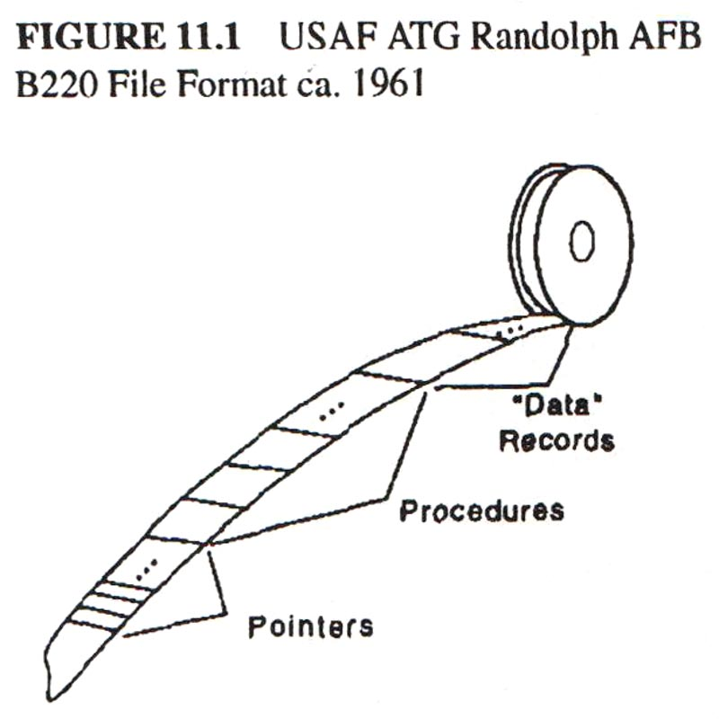 Force. The first was on the Burroughs 220 in the form of a style for transporting files from one Air Training Command installation to another. There were no standard operating systems or file formats back then, so some (to this day unknown) designer decided to finesse the problem by taking each file and dividing it into three parts. The third part was all of the actual data records of arbitrary size and format. The second part contained the B220 procedures that knew how to get at records and fields to copy and update the third part. And the first part was an array of relative pointers into entry points of the procedures in the second part (the initial pointers were in a standard order representing standard meanings). Needless to say, this was a great idea, and was used in many subsequent systems until the enforced use of COBOL drove it out of existence.
The second barely-seeing of the idea came just a little later when ATC decided to replace the 220 with a B5000. I didn't have the perspective to really appreciate it at the time, but I did take note of its segmented storage system, its efficiency of HLL compilation and byte-coded execution, its automatic mechanisms for subroutine calling and multiprocess switching, its pure code for sharing, its protection mechanisms, etc. And, I saw that the access to its Program Reference Table corresponded to the 220 file system scheme of providing a procedural interface to a module. However, my big hit from this machine at this time was not the OOP idea, but some insights into HLL translation and evaluation. [Barton, 1961] [Burroughs, 1961]
After the Air Force, I worked my way through the rest of college by programming mostly retrieval 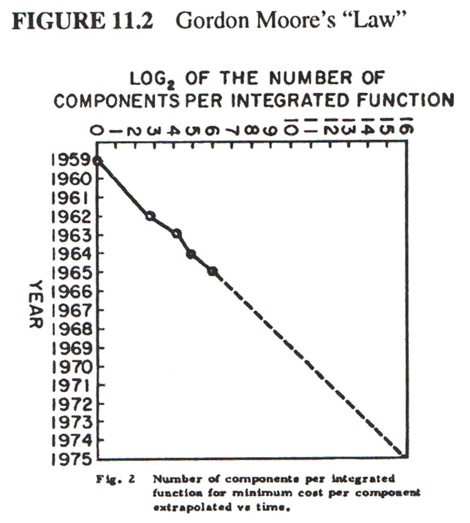 systems for large collections of weather data for the National Center for Atmospheric Research. I got interested in simulation in general—particularly of one machine by another—but aside from doing a one-dimensional version of a bit-field block transfer (bitblt) on a CDC 6600 to simulate word sizes of various machines, most of my attention was distracted by school, or I should say the theatre at school. While in Chippewa Falls helping to debug the 6600, I read an article by Gordon Moore which predicted that integrated silicon on chips was going to exponentially improve in density and cost over many years [Moore 65]. At the time in 1965, standing next to the room-sized freon-cooled 10 MIP 6600, his astounding predictions had little projection into my horizons.
Through a series of flukes, I wound up in graduate school at the University of Utah in the Fall of 1966, "knowing nothing." That is to say, I had never heard of ARPA or its projects, or that Utah's main goal in this community was to solve the "hidden line" problem in 3D graphics, until I actually walked into Dave Evans' office looking for a job and a desk. On Dave's desk was a foot-high stack of brown covered documents, one of which he handed to me: "Take this and read it."
Every newcomer got one. The title was "Sketchpad: A man-machine graphical communication system" [Sutherland, 1963]. What it could do was quite remarkable, and completely foreign to any use of a computer I had ever encountered. The three big ideas that were easiest to grapple with were: it was the invention of modern interactive computer graphics; things were described by making a "master drawing" that could produce "instance drawings"; control and dynamics were supplied by "constraints," also in graphical form, that could be applied to the masters to shape an inter-related parts. Its data structures were hard to understand—the only vaguely familiar construct was the embedding of pointers to procedures and using a process called reverse indexing to jump through them to routines, like the 220 file system [Ross, 1961]. It was the first to have clipping and zooming windows—one "sketched" on a virtual sheet about 1/3 mile square!
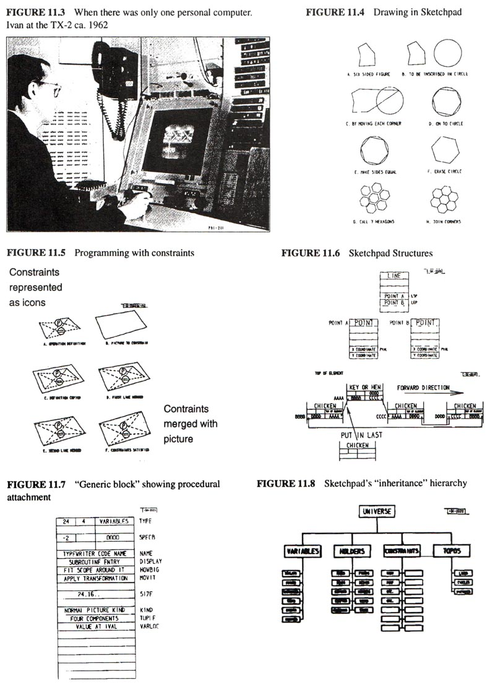Head whirling, I found my desk. On it was a pile of tapes and listings, and a note: "This is the Algol for the 1108. It doesn't work. Please make it work." The latest graduate student gets the latest dirty task.
The documentation was incomprehensible. Supposedly, this was the Case-Western Reserve 1107 Algol—but it had been doctored to make a language called Simula; the documentation read like Norwegian transliterated into English, which in fact it was. There were uses of words like activity and process that didn't seem to coincide with normal English usage.
Finally, another graduate student and I unrolled the program listing 80 feet down the hall and crawled over it yelling discoveries to each other. The weirdest part was the storage allocator, which did not obey a stack discipline as was usual for Algol. A few days later, that provided the clue. What Simula was allocating were structures very much like the instances of Sketchpad. There were descriptions that acted like masters and they could create instances, each of which was an independent entity. What Sketchpad called masters and instances, Simula called activities and processes. Moreover, Simula was a procedural language for controlling Sketchpad-like objects, thus having considerably more flexibility than constraints (though at some cost in elegance) [Nygaard, 1966, Nygaard, 1983].
This was the big hit, and I've not been the same since. I think the reason the hit had such impact was that I had seen the idea enough times in enough different forms that the final recognition was in such general terms to have the quality of an epiphany. My math major had centered on abstract algebras with their few operations generally applying to many structures. My biology major had focused on both cell metabolism and larger scale morphogenesis with its notions of simple mechanisms controlling complex processes and one kind of building block able to differentiate into all needed building blocks. The 220 file system, the B5000, Sketchpad, and finally Simula, all used the same idea for different purposes. Bob Barton, the main designer of the B5000 and a professor at Utah had said in one of his talks a few days earlier: "The basic principle of recursive design is to make the parts have the same power as the whole." For the first time I thought of the whole as the entire computer and wondered why anyone would want to divide it up into weaker things called data structures and procedures. Why not divide it up into little computers, as time sharing was starting to? But not in dozens. Why not thousands of them, each simulating a useful structure?
I recalled the monads of Leibniz, the "dividing nature at its joints" discourse of Plato, and other attempts to parse complexity. Of course, philosophy is about opinion and engineering is about deeds, with science the happy medium somewhere in between. It is not too much of an exaggeration to say that most of my ideas from then on took their roots from Simula—but not as an attempt to improve it. It was the promise of an entirely new way to structure computations that took my fancy. As it turned out, it would take quite a few years to understand how to use the insights and to devise efficient mechanisms to execute them.
Dave Evans was not a great believer in graduate school as an institution. As with many of the ARPA "contractors" he wanted his students to be doing "real things"; they should move through graduate school as quickly as possible; and their theses should advance the state of the art. Dave would often get consulting jobs for his students, and in early 1967, he introduced me to Ed Cheadle, a friendly hardware genius at a local aerospace company who was working on a "little machine." It was not the first personal computer—that was the LINC of Wes Clark—but Ed wanted it for noncomputer professionals, in particular, he wanted to program it in a higher level language, like BASIC. I said; "What about JOSS? It's nicer." He said: "Sure, whatever you think," and that was the start of a very pleasant collaboration we called the FLEX machine. As we got deeper into the design, we realized that we wanted to dynamically simulate and extend, neither of which JOSS (or any existing language that I knew of) was particularly good at. The machine was too small for Simula, so that was out. The beauty of JOSS was the extreme attention of its design to the end-user—in this respect, it has not been surpassed [Joss 1964, Joss 1978]. JOSS was too slow for serious computing (but cf. Lampson 65), did not have real procedures, variable scope, and so forth. A language that looked a little like JOSS but had considerably more potential power was Wirth's EULER [Wirth 1966]. This was a generalization of Algol along lines first set forth by van Wijngaarden [van Wijngaarden 1963] in which types were discarded, different features consolidated, procedures were made into first class objects, and so forth. Actually kind of LISPlike, but without the deeper insights of LISP.
But EULER was enough of "an almost new thing" to suggest that the same techniques be applied to simplify Simula. The EULER compiler was a part of its formal definition and made a simple conversion into B5000-like byte-codes. This was appealing because it suggested that Ed's little machine could run byte-codes emulated in the longish slow microcode that was then possible. The EULER compiler however, was tortuously rendered in an "extended precedence" grammar that actually required concessions in the language syntax (e.g. "," could only be used in one role because the precedence scheme had no state space). I initially adopted a bottom-up Floyd-Evans parser (adapted from Jerry Feldman's original compiler-compiler [Feldman 1977]) and later went to various top-down schemes, several of them related to Shorre's META II [Shorre 1963] that eventually put the translater in the name space of the language.
The semantics of what was now called the FLEX language needed to be influenced more by Simula than by Algol or EULER. But it was not completely clear how. Nor was it clear how the users should interact with the system. Ed had a display (for graphing, etc.) even on his first machine, and the LINC had a "glass teletype," but a Sketchpad-like system seemed far beyond the scope that we could accomplish with the maximum of 16k 16-bit words that our cost budget allowed.
This was in early 1967, and while we were pondering the FLEX machine, Utah was visited by Doug Engelbart. A prophet of Biblical dimensions, he was very much one of the fathers of what on the FLEX machine I had started to call "personal computing." He actually traveled with his own 16mm projector with a remote control for starting and stopping it to show what was going on (people were not used to seeing and following cursors back then). His notion on the ARPA dream was that the destiny of oNLine Systems (NLS) was the "augmentation of human intellect" via an interactive vehicle navigating through "thought vectors in concept space." What his system could do then—even by today's standards—was incredible. Not just hypertext, but graphics, multiple panes, efficient navigation and command input, interactive collaborative work, etc. An entire conceptual world and world view [Engelbart 68]. The impact of this vision was to produce in the minds of those who were "eager to be augmented" a compelling metaphor of what interactive computing should be like, and I immediately adopted many of the ideas for the FLEX machine.
In the midst of the ARPA context of human-computer symbiosis and in the presence of Ed's "little machine", Gordon Moore's "Law" again came to mind, this time with great impact. For the first time I made the leap of putting the room-sized interactive TX-2 or even a 10 MIP 6600 on a desk. I was almost frightened by the implications; computing as we knew it couldn't survive—the actual meaning of the word changed—it must have been the same kind of disorientation people had after reading Copernicus and first looked up from a different Earth to a different Heaven.
Instead of at most a few thousand institutional mainframes in the world—even today in 1992 it is estimated that there are only 4000 IBM mainframes in the entire world—and at most a few thousand users trained for each application, there would be millions of personal machines and users, mostly outside of direct institutional control. Where would the applications and training come from? Why should we expect an applications programmer to anticipate the specific needs of a particular one of the millions of potential users? An extensional system seemed to be called for in which the end-users would do most of the tailoring (and even some of the direct construction) of their tools. ARPA had already figured this out in the context of their early successes in time-sharing. Their larger metaphor of human-computer symbiosis helped the community avoid making a religion of their subgoals and kept them focused on the abstract holy grail of "augmentation."
One of the interesting features of NLS was that its user interface was parametric and could be supplied by the end user in the form of a "grammar of interaction" given in their compiler-compiler TreeMeta. This was similar to William Newman's early "Reaction Handler" [Newman 66] work in specifying interfaces by having the end-user or developer construct through tablet and stylus an iconic regular expression grammar with action procedures at the states (NLS allowed embeddings via its context free rules). This was attractive in many ways, particularly William's scheme, but to me there was a monstrous bug in this approach. Namely, these grammars forced the user to be in a system state which required getting out of before any new kind of interaction could be done. In hierarchical menus or "screens" one would have to backtrack to a master state in order to go somewhere else. What seemed to be required were states in which there was a transition arrow to every other state—not a fruitful concept in formal grammar theory. In other words, a much "flatter" interface seemed called for—but could such a thing be made interesting and rich enough to be useful?
Again, the scope of the FLEX machine was too small for a miniNLS, and we were forced to find alternate designs that would incorporate some of the power of the new ideas, and in some cases to improve them. I decided that Sketchpad's notion of a general window that viewed a larger virtual world was a better idea than restricted horizontal panes and with Ed came up with a clipping algorithm very similar to that under development at the same time by Sutherland and his students at Harvard for the 3D "virtual reality" helmet project [Sutherland 1968].
Object references were handled on the FLEX machine as a generalization of B5000 descriptors. Instead of a few formats for referencing numbers, arrays, and procedures, a FLEX descriptor contained two pointers: the first to the "master" of the object, and the second to the object instances (later we realized that we should put the master pointer in the instance to save space). A different method was taken for handling generalized assignment. The B5000 used l-values and r-values [Strachey*] which worked for some cases but couldn't handle more complex objects. For example: a[55] := 0, if a was a sparse array whose default element was 0 would still generate an element in the array because := is an "operator" and a[55] is dereferenced into an l-value before anyone gets to see that the r-value is the default element, regardless of whether a is an array or a procedure fronting for an array. What is needed is something like: a(55, ':=', 0), which can look at all relevant operands before any store is made. In other words, := is not an operator, but a kind of index that can select a behavior from a complex object. It took me a remarkably long time to see this, partly I think because one has to invert the traditional notion of operators and functions, etc., to see that objects need to privately own all of their behaviors: that objects are a kind of mapping whose values are its behaviors. A book on logic by Carnap [Ca *] helped by showing that "intensional" definitions covered the same territory as the more traditional extensional technique and were often more intuitive and convenient.
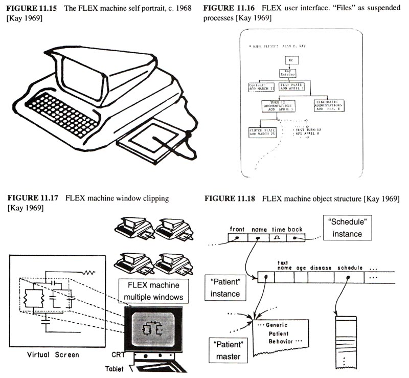As in Simula, a coroutining control structure [Conway, 1963] was used as a way to suspend and resume objects. Persistent objects like files and documents were treated as suspended processes and were organized according to their Algol-like static variable scopes. These were shown on the screen and could be opened by pointing at them. Coroutining was also used as a control structure for looping. A single operator while was used to test the generators which returned false when unable to furnish a new value. Booleans were used to link multiple generators. So a "for-type" loop would be written as:
while i <= 1 to 30 by 2 ^ j <= 2 to k by 3 do j<-j * i;
where the ... to ... by ... was a kind of coroutine object. Many of these ideas were reimplemented in a stronger style in Smalltalk later on.
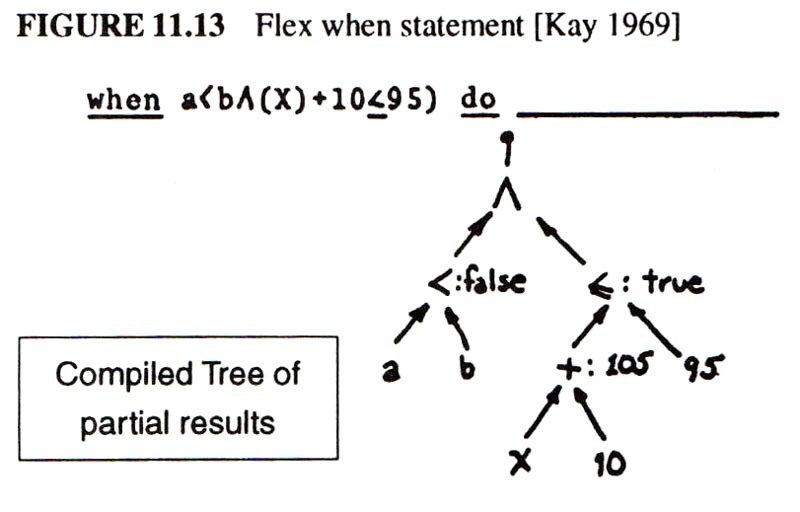Another control structure of interest in FLEX was a kind of event-driven "soft interrupt" called when. Its boolean expression was compiled into a "tournament sort" tree that cached all possible intermediate results. The relevant variables were threaded through all of the sorting trees in all of the whens so that any change only had to compute through the necessary parts of the booleans. The efficiency was very high and was similar to the techniques now used for spreadsheets. This was an embarrassment of riches with difficulties often encountered in event-driven systems. Namely, it was a complex task to control the context of just when the whens should be sensitive. Part of the boolean expression had to be used to check the contexts, where I felt that somehow the structure of the program should be able to set and unset the event drivers. This turned out to beyond the scope of the FLEX system and needed to wait for a better architecture.
Still, quite a few of the original FLEX ideas in their proto-object form did turn out to be small enough to be feasible on the machine. I was writing the first compiler when something unusual happened: the Utah graduate students got invited to the ARPA contractors meeting held that year at Alta, Utah. Towards the end of the three days, Bob Taylor, who had succeeded Ivan Sutherland as head of ARPA-IPTO, asked the graduate students (sitting in a ring around the outside of the 20 or so contractors) if they had any comments. John Warnock raised his hand and pointed out that since the ARPA grad students would all soon be colleagues (and since we did all the real work anyway), ARPA should have a contractors-type meeting each year for the grad students. Taylor thought this was a great idea and set it up for the next summer.
Another ski-lodge meeting happened in Park City later that spring. The general topic was education and it was the first time I heard Marvin Minsky speak. He put forth a terrific diatribe against traditional education methods, and from him I heard the ideas of Piaget and Papert for the first time. Marvin's talk was about how we think about complex situations and why schools are really bad places to learn these skills. He didn't have to make any claims about computers+kids to make his point. It was clear that education and learning had to be rethought in the light of 20th century cognitive psychology and how good thinkers really think. Computing enters as a new representation system with new and useful metaphors for dealing with complexity, especially of systems [Minsky 70].
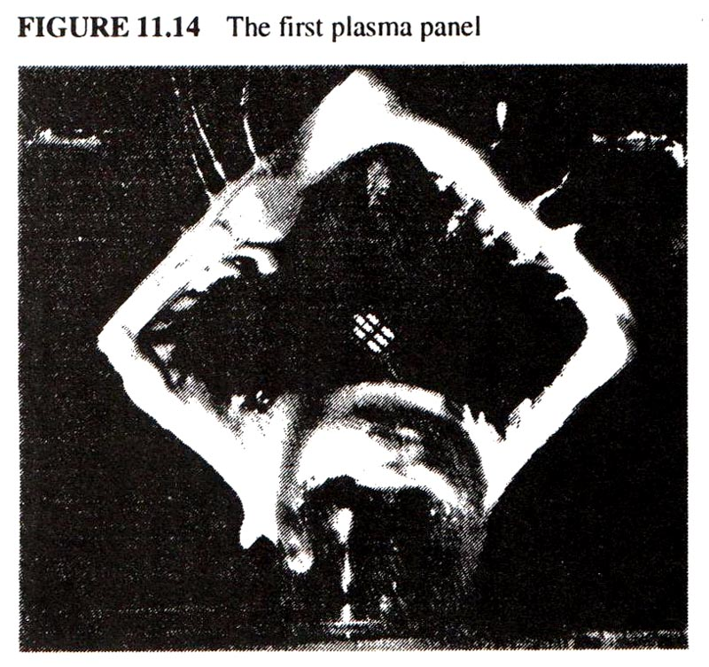For the summer 1968 ARPA grad students meeting at Allerton House in Illinois, I boiled all the mechanisms in the FLEX machine down into one 2'x3' chart. This included all the "object structures", the compiler, the byte-code interpreter, i/o handlers, and a simple display editor for text and graphics. The grad students were a distinguished group that did indeed become colleagues in subsequent years. My FLEX machine talk was a success, but the big whammy for me came during a tour to U of Illinois where I saw a 1" square lump of glass and neon gas in which individual spots would light up on command—it was the first flat-panel display. I spent the rest of the conference calculating just when the silicon of the FLEX machine could be put on the back of the display. According to Gordon Moore's "Law", the answer seemed to be sometime in the late seventies or early eighties. A long time off—it seemed too long to worry much about it then.
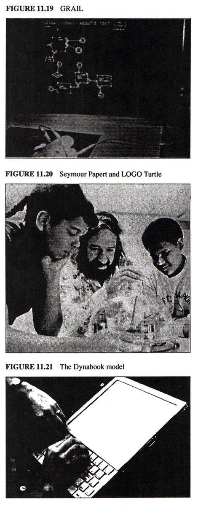But later that year at RAND I saw a truly beautiful system. This was GRAIL, the graphical followon to JOSS. The first tablet (the famous RAND tablet) was invented by Tom Ellis [Davis 1964] in order to capture human gestures, and Gave Groner wrote a program to efficiently recognize and respond to them [Groner 1966]. Though everything was fastened with bubble gum and the system crashed often, I have never forgotten my first interactions with this system. It was direct manipulation, it was analogical, it was modeless, it was beautiful. I realized that the FLEX interface was all wrong, but how could something like GRAIL be stuffed into such a tiny machine since it required all of a stand-alone 360/44 to run in?
A month later, I finally visited Seymour Papert, Wally Feurzig, Cynthia Solomon and some of the other original researchers who had built LOGO and were using it with children in the Lexington schools. Here were children doing real programming with a specially designed language and environment. As with Simula leading to OOP, this encounter finally hit me with what the destiny of personal computing really was going to be. Not a personal dynamic vehicle, as in Engelbart's metaphor opposed to the IBM "railroads", but something much more profound: a personal dynamic medium. With a vehicle one could wait until high school and give "drivers ed", but if it was a medium, it had to extend into the world of childhood.
Now the collision of the FLEX machine, the flat-screen display, GRAIL, Barton's "communications" talk, McLuhan, and Papert's work with children all came together to form an image of what a personal computer really should be. I remembered Aldus Manutius who 40 years after the printing press put the book into its modern dimensions by making it fit into saddlebags. It had to be no larger than a notebook, and needed an interface as friendly as JOSS', GRAIL's, and LOGO's, but with the reach of Simula and FLEX. A clear romantic vision has a marvelous ability to focus thought and will. Now it was easy to know what to do next. I built a cardboard model of it to see what it would look and feel like, and poured in lead pellets to see how light it would have to be (less than two pounds). I put a keyboard on it as well as a stylus because, even if hand printing and writing were recognized perfectly (and there was no reason to expect that it would be), there still needed to be a balance between the low speed tactile degrees of freedom offered by the stylus and the more limited but faster keyboard. Since ARPA was starting to experiment with packet radio, I expected that the Dynabook when it arrived a decade or so hence, would have a wireless networking system.
Early next year (1969) there was a conference on Extensible Languages in which almost every famous name in the field attended. The debate was great and weighty—it was a religious war of unimplemented poorly thought out ideas. As Alan Perlis, one of the great men in Computer Science, put it with characteristic wit:
It has been such a long time since I have seen so many familiar faces shouting among so many familiar ideas. Discovery of something new in programming languages, like any discovery, has somewhat the same sequence of emotions as falling in love. A sharp elation followed by euphoria, a feeling of uniqueness, and ultimately the wandering eye (the urge to generalize) [ACM 69].
But it was all talk—no one had done anything yet. In the midst of all this, Ned Irons got up and presented IMP, a system that had already been working for several years that was more elegant than most of the nonworking proposals. The basic idea of IMP was that you could use any phrase in the grammar as a procedure heading and write a semantic definition in terms of the language as extended so far [Irons 1970].
I had already made the first version of the FLEX machine syntax driven, but where the meaning of a phrase was defined in the more usual way as the kind of code that was emitted. This separated the compiler-extensor part of the system from the end-user. In Irons' approach, every procedure in the system defined its own syntax in a natural and useful manner. I incorporated these ideas into the second versions of the FLEX machine and started to experiment with the idea of a direct interpreter rather than a syntax directed compiler. Somewhere in all of this, I realized that the bridge to an object-based system could be in terms of each object as a syntax directed interpreter of messages sent to it. In one fell swoop this would unify object-oriented semantics with the ideal of a completely extensible language. The mental image was one of separate computers sending requests to other computers that had to be accepted and understood by the receivers before anything could happen. In today's terms every object would be a server offering services whose deployment and discretion depended entirely on the server's notion of relationship with the servee. As Liebniz said: "To get everything out of nothing, you only need to find one principle." This was not well thought out enough to do the FLEX machine any good, but formed a good point of departure for my thesis [Kay 69], which as Ivan Sutherland liked to say was "anything you can get three people to sign."
After three people signed it (Ivan was one of them), I went to the Stanford AI project and spent much more time thinking about notebook KiddyKomputers than AI. But there were two AI designs that were very intriguing. The first was Carl Hewitt's PLANNER, a programmable logic system that formed the deductive basis of Winograd's SHRDLU [Sussman 69, Hewitt 69] I designed several languages based on a combination of the pattern matching schemes of FLEX and PLANNER [Kay 70]. The second design was Pat Winston's concept formation system, a scheme for building semantic networks and comparing them to form analogies and learning processes [Winston 70]. It was kind of "object-oriented". One of its many good ideas was that the arcs of each net which served as attributes in AOV triples should themselves be modeled as nets. Thus, for example a first order arc called LEFT-OF could be asked a higher order question such as "What is your converse?" and its net could answer: RIGHT-OF. This point of view later formed the basis for Minsky's frame systems [Minsky 75]. A few years later I wished I had paid more attention to this idea.
That fall, I heard a wonderful talk by Butler Lampson about CAL-TSS, a capability-based operating system that seemed very "object-oriented" [Lampson 69]. Unforgeable pointers (ala B5000) were extended by bit-masks that restricted access to the object's internal operations. This confirmed my "objects as server" metaphor. There was also a very nice approach to exception handling which reminded me of the way failure was often handled in pattern matching systems. The only problem— which the CAL designers did not see as a problem at all—was that only certain (usually large and slow) things were "objects". Fast things and small things, etc., weren't. This needed to be fixed.
The biggest hit for me while at SAIL in late '69 was to really understand LISP. Of course, every student knew about car, cdr, and cons, but Utah was impoverished in that no one there used LISP and hence, no one had penetrated the mysteries of eval and apply. I could hardly believe how beautiful and wonderful the idea of LISP was [McCarthy 1960]. I say it this way because LISP had not only been around enough to get some honest barnacles, but worse, there were deep flaws in its logical foundations. By this, I mean that the pure language was supposed to be based on functions, but its most important components—such as lambda expressions, quotes, and conds—were not functions at all, and instead were called special forms. Landin and others had been able to get quotes and conds in terms of lambda by tricks that were variously clever and useful, but the flaw remained in the jewel. In the practical language things were better. There were not just EXPRs (which evaluated their arguments), but FEXPRs (which did not). My next question was, why on earth call it a functional language? Why not just base everything on FEXPRs and force evaluation on the receiving side when needed? I could never get a good answer, but the question was very helpful when it came time to invent Smalltalk, because this started a line of thought that said "take the hardest and most profound thing you need to do, make it great, and then build every easier thing out of it". That was the promise of LISP and the lure of lambda—needed was a better "hardest and most profound" thing. Objects should be it.
In July 1970, Xerox, at the urging of its chief scientist Jack Goldman, decided to set up a long range research center in Palo Alto, California. In September, George Pake, the former chancellor at Washington University where Wes Clark's ARPA project was sited, hired Bob Taylor (who had left the ARPA office and was taking a sabbatical year at Utah) to start a "Computer Science Laboratory." Bob visited Palo Alto and we stayed up all night talking about it. The Mansfield Amendment was threatening to blindly muzzle the most enlightened ARPA funding in favor of directly military research, and this new opportunity looked like a promising alternative. But work for a company? He wanted me to consult and I asked for a direction. He said: follow your instincts. I immediately started working up a new version of the KiddiKomp that could be made in enough quantity to do experiments leading to the user interface design for the eventual notebook. Bob Barton liked to say that "good ideas don't often scale." He was certainly right when applied to the FLEX machine. The B5000 just didn't directly scale down into a tiny machine. Only the byte-codes did, and even these needed modification. I decided to take another look at Wes Clark's LINC, and was ready to appreciate it much more this time [Clark 1965].
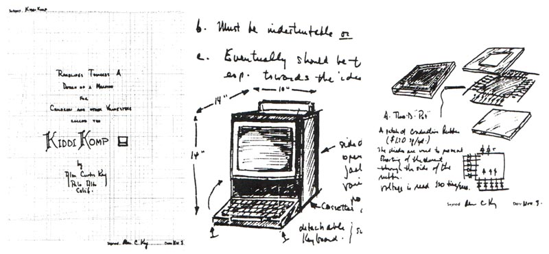I still liked pattern-directed approaches and OOP so I came up with a language design called "Simulation LOGO" or SLOGO for short (I had a feeling the first versions might run nice and slow). This was to be built into a SONY "tummy trinitron" and would use a coarse bit-map display and the FLEX machine rubber tablet as a pointing device.
Another beautiful system that I had come across was Peter Deutsch's PDP-1 LISP (implemented when he was only 15) [Deutsch 1966]. It used only 2K (18-bit words) of code and could run quite well in a 4K machine (it was its own operating system and interface). It seemed that even more could be done if the system were byte-coded, run by an architecture that was hospitable to dynamic systems, and stuck into the ever larger ROMs that were becoming available. One of the basic insights I had gotten from Seymour was that you didn't have to do a lot to make a computer an "object for thought" for children, but what you did had to be done well and be able to apply deeply.
Right after New Years 1971, Bob Taylor scored an enormous coup by attracting most of the struggling Berkeley Computer Corp to PARC. This group included Butler Lampson, Chuck Thacker, Peter Deutsch, Jim Mitchell, Dick Shoup, Willie Sue Haugeland, and Ed Fiala. Jim Mitchell urged the group to hire Ed McCreight from CM and he arrived soon after. Gary Starkweather was there already, having been thrown out of the Xerox Rochester Labs for wanting to build a laser printer (which was against the local religion). Not long after, many of Doug Englebart's people joined up—part of the reason was that they want to reimplement NLS as a distributed network system, and Doug wanted to stay with time-sharing. The group included Bill English (the co-inventor of the mouse), Jeff Rulifson, and Bill Paxton.
Almost immediately we got into trouble with Xerox when the group decided that the new lab needed a PDP-10 for continuity with the ARPA community. Xerox (which had bought SDS essentially sight unseen a few years before) was horrified at the idea of their main competitor's computer being used in the lab. They balked. The newly formed PARC group had a meeting in which it was decided that it would take about three years to do a good operating system for the XDS SIGMA-7 but that we could build "our own PDP-10" in a year. My reaction was "Holy cow!" In fact, they pulled it it off with considerable panache. MAXC was actually a microcoded emulation of the PDP-10 that used for the first time the new integrated chip memories (1K bits!) instead of core memory. Having practical in house experience with both of these new technologies was critical for the more radical systems to come.
One little incident of LISP beauty happened when Allen Newell visited PARC with his theory of hierarchical thinking and was challenged to prove it. He was given a programming problem to solve while the protocol was collected. The problem was: given a list of items, produce a list consisting of all of the odd indexed items followed by all of the even indexed items. Newell's internal programming language resembled IPL-V in which pointers are manipulated explicitly, and he got into quite a struggle to do the program. In 2 seconds I wrote down:
oddsEvens(x) = append(odds(x), evens(x))
the statement of the problem in Landin's LISP syntax—and also the first part of the solution. Then a few seconds later:
where odds(x) = if null(x) ∨ null(tl(x)) then x
else hd(x) & odds(ttl(x))
evens(x) = if null(x) ∨ null(tl(x)) then nil
else odds(tl(x))
This characteristic of writing down many solutions in declarative form and have them also be the programs is part of the appeal and beauty of this kind of language. Watching a famous guy much smarter than I struggle for more than 30 minutes to not quite solve the problem his way (there was a bug) made quite an impression. It brought home to me once again that "point of view is worth 80 IQ points." I wasn't smarter but I had a much better internal thinking tool to amplify my abilities. This incident and others like it made paramount that any tool for children should have great thinking patterns and deep beauty "built-in."
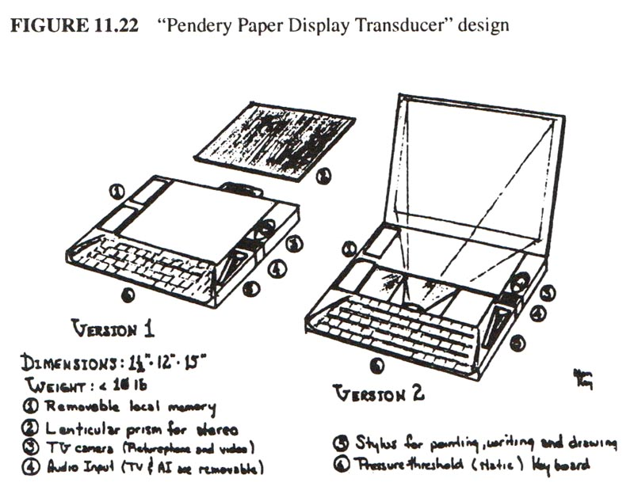Right around this time we were involved in another conflict with Xerox management, in particular with Don Pendery the head "planner". He really didn't understand what we were talking about and instead was interested in "trends" and "what was the future going to be like" and how could Xerox "defend against it." I got so upset I said to him, "Look. The best way to predict the future is to invent it. Don't worry about what all those other people might do, this is the century in which almost any clear vision can be made!" He remained unconvinced, and that led to the famous "Pendery Papers for PARC Planning Purposes," a collection of essays on various aspects of the future. Mine proposed a version of the notebook as a "Display Transducer", and Jim Mitchell's was entitled "NLS on a Minicomputer."
Bill English took me under his wing and helped me start my group as I had always been a lone wolf and had no idea how to do it. One of his suggestions was that I should make a budget. I'm afraid that I really did ask Bill, "What's a budget?" I remembered at Utah, in pre-Mansfield Amendment days, Dave Evans saying to me as he went off on a trip to ARPA, "We're almost out of money. Got to go get some more." That seemed about right to me. They give you some money. You spend it to find out what to do next. You run out. They give you some more. And so on. PARC never quite made it to that idyllic standard, but for the first half decade it came close. I needed a group because I had finally realized that I did not have all of the temperaments required to completely finish an idea. I called it the Learning Research Group (LRG) to be as vague as possible about our charter. I only hired people that got stars in their eyes when they heard about the notebook computer idea. I didn't like meetings: didn't believe brainstorming could substitute for cool sustained thought. When anyone asked me what to do, and I didn't have a strong idea, I would point at the notebook model and say, "Advance that." LRG members developed a very close relationship with each other—as Dan Ingalls was to say later: "... the rest has enfolded through the love and energy of the whole Learning Research Group." A lot of daytime was spent outside of PARC, playing tennis, bikeriding, drinking beer, eating Chinese food, and constantly talking about the Dynabook and its potential to amplify human reach and bring new ways of thinking to a faltering civilization that desperately needed it (that kind of goal was common in California in the aftermath of the sixties).
In the summer of '71 I refined the KiddiKomp idea into a tighter design called miniCOM. It used a bit-slice approach like the NOVA 1200, had a bit-map display, a pointing device, a choice of "secondary" (really tertiary) storages, and a language I now called "Smalltalk"—as in "programming should be a matter of ..." and "children should program in ...". The name was also a reaction against the "IndoEuropean god theory" where systems were named Zeus, Odin, and Thor, and hardly did anything. I figured that "Smalltalk" was so innocuous a label that if it ever did anything nice people would be pleasantly surprised.
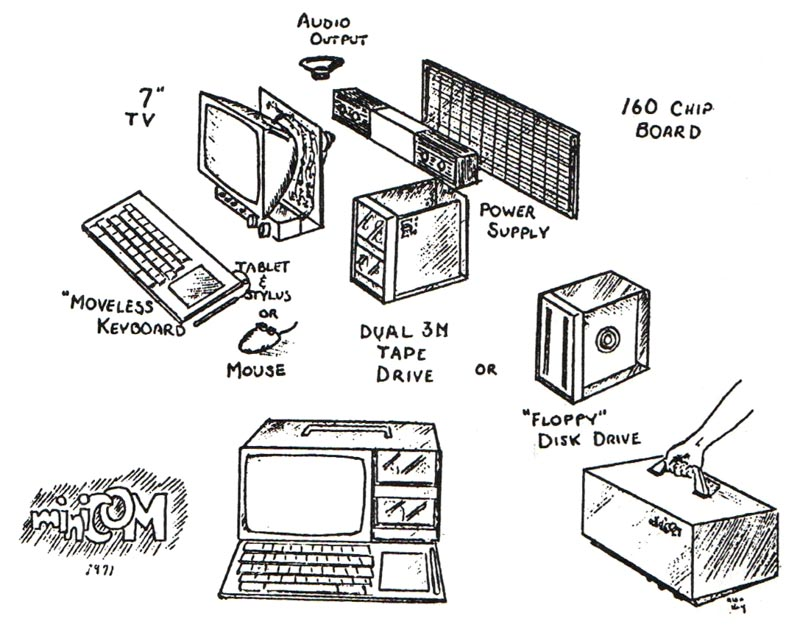
Smalltalk-71 Programs
to T 'and' :y do 'y'
to F 'and' :y do F
to 'factorial' 0 is 1
to 'factorial' :n do 'n*factorial n-1'
to 'fact' :n do 'to 'fact' n do factorial n. ^ fact n'
to :e 'is-member-of' [] do F
to :e 'is-member-of' :group
do'if e = firstof group then T
else e is-member-of rest of group'
to 'cons' :x :y is self
to 'hd' ('cons' :a :b) do 'a'
to 'hd' ('cons' :a :b) '<-' :c do 'a <- c'
to 'tl' ('cons' :a :b) do 'b'
to 'tl' ('cons' :a :b) '<-' :c do 'b <- c'
to :robot 'pickup' :block
do 'robot clear-top-of block.
robot hand move-to block.
robot hand lift block 50.
to 'height-of' block do 50'
This Smalltalk language (today labeled -71) was very influenced by FLEX, PLANNER, LOGO, META II, and my own derivatives from them. It was a kind of parser with object-attachment that executed tokens directly. (I think the awkward quoting conventions come from META). I was less interested in programs as algebraic patterns than I was in a clear scheme that could handle a variety of styles of programming. The patterned front-end allowed simple extension, patterns as "data" to be retrieved, a simple way to attach behaviors to objects, and a rudimentary but clear expression of its eval in terms that I thought children could understand after a few years experience with simpler programming. Program storage was sorted into a discrimination net and evaluation was straightforward pattern-matching.
As I mentioned previously, it was annoying that the surface beauty of LISP was marred by some of its key parts having to be introduced as "special forms" rather than as its supposed universal building block of functions. The actual beauty of LISP came more from the promise of its metastructures than its actual model. I spent a fair amount of time thinking about how objects could be characterized as universal computers without having to have any exceptions in the central metaphor. What seemed to be needed was complete control over what was passed in a message send; in particular when and in what environment did expressions get evaluated?
An elegant approach was suggested in a CMU thesis of Dave Fisher [Fisher 70] on the synthesis of control structures. ALGOL60 required a separate link for dynamic subroutine linking and for access to static global state. Fisher showed how a generalization of these links could be used to simulate a wide variety of control environments. One of the ways to solve the "funarg problem" of LISP is to associate the proper global state link with expressions and functions that are to be evaluated later so that the free variables referenced are the ones that were actually implied by the static form of the language. The notion of "lazy evaluation" is anticipated here as well.
Nowadays this approach would be called reflective design. Putting it together with the FLEX models suggested that all that should be required for "doing LISP right" or "doing OOP right" would be to handle the mechanics of invocations between modules without having to worry about the details of the modules themselves. The difference between LISP and OOP (or any other system) would then be what the modules could contain. A universal module (object) reference —ala B5000 and LISP—and a message holding structure—which could be virtual if the senders and receivers were sympatico— that could be used by all would do the job.
If all of the fields of a messenger structure were enumerated according to this view, we would have:
| GLOBAL: | the environment of the parameter values |
| SENDER: | the sender of the message |
| RECEIVER: | the receiver of the message |
| REPLY-STYLE: | wait, fork, ...? |
| STATUS: | progress of the message |
| REPLY: | eventual result (if any) |
| OPERATION SELECTOR: | relative to the receiver |
| # OF PARAMETERS: | |
| P1: | |
| ...: | |
| Pn: |
This is a generalization of a stack frame, such as used by the B5000, and very similar to what a good intermodule scheme would require in an operating system such as CAL-TSS—a lot of state for every transaction, but useful to think about.
Much of the pondering during this state of grace (before any workable implementation) had to do with trying to understand what "beautiful" might mean with reference to object-oriented design. A subjective definition of a beautiful thing is fairly easy but is not of much help: we think a thing beautiful because it evokes certain emotions. The cliche has it lie "in the eye of the beholder" so that it is difficult to think of beauty as other than a relation between subject and object in which the predispositions of the subject are all important.
If there are such a thing as universally appealing forms then we can perhaps look to our shared biological heritage for the predispositions. But, for an object like LISP, it is almost certain that most of the basis of our judgment is learned and has much to do with other related areas that we think are beautiful, such as much of mathematics.
One part of the perceived beauty of mathematics has to do with a wondrous synergy between parsimony, generality, enlightenment, and finesse. For example, the Pythagorean Theorem is expressible in a single line, is true for all of the infinite number of right triangles, is incredibly useful in understanding many other relationships, and can be shown by a few simple but profound steps.
When we turn to the various languages for specifying computations we find many to be general and a few to be parsimonious. For example, we can define universal machine languages in just a few instructions that can specify anything that can be computed. But most of these we would not call beautiful, in part because the amount and kind of code that has to be written to do anything interesting is so contrived and turgid. A simple and small system that can do interesting things also needs a "high slope"—that is a good match between the degree of interestingness and the level of complexity needed to express it.
A fertilized egg that can transform itself into the myriad of specializations needed to make a complex organism has parsimony, generality, enlightenment, and finesse—in short, beauty, and a beauty much more in line with my own esthetics. I mean by this that Nature is wonderful both at elegance and practicality—the cell membrane is partly there to allow useful evolutionary kludges to do their necessary work and still be able act as component by presenting a uniform interface to the world.
One of my continual worries at this time was about the size of the bit-map display. Even if a mixed mode was used (between fine-grained generated characters and coarse-grained general bit-map for graphics) it would be hard to get enough information on the screen. It occurred to me (in a shower, my favorite place to think) that FLEXtype windows on a bit-map display could be made to appear as overlapping documents on a desktop. When an overlapped one was refreshed it would appear to come to the top of the stack. At the time, this did not appear as the wonderful solution to the problem but it did have the effect of magnifying the effective area of the display enormously, so I decided to go with it.
To investigate the use of video as a display medium, Bill English and Butler Lampson specified an experimental character generator (built by Roger Bates) for the POLOS (PARC OnLine Office System) terminals. Gary Starkweather had just gotten the first laser printer to work and we ran a coax over to his lab to feed him some text to print. The "SLOT machine" (Scanning Laser Output Terminal) was incredible. The only Xerox copier Gary could get to work on went at 1 page a second and could not be slowed down. So Gary just made the laser run at that rate with a resolution of 500 pixels to the inch!
The character generator's font memory turned out to be large enough to simulate a bit-map display if one displayed a fixed "strike" and wrote into the font memory. Ben Laws built a beautiful font editor and he and I spent several months learning about the peculiarities of the human visual system (it is decidedly non-linear). I was very interested in high-quality text and graphical presentations because I thought it would be easier to get the Dynabook into schools as a "trojan horse" by simply replacing school books rather than to try to explain to teachers and school boards what was really great about personal computing.
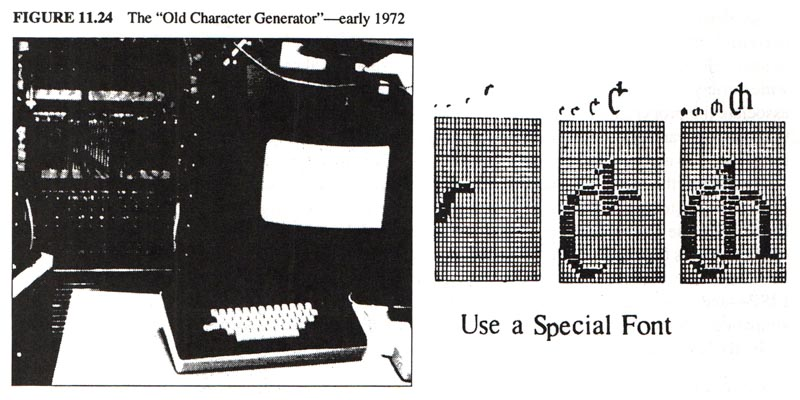Things were generally going well all over the lab until May of 72 when I tried to get resources to build a few miniCOMs. A relatively new executive ("X") did not want to give them to me. I wrote a memo explaining why the system was a good idea (see Appendix II), and then had a meeting to discuss it. "X" shot it down completely saying among other things that we had used too many green stamps getting Xerox to fund the time-shared MAXC and this use of resources for personal machines would confuse them. I was shocked. I crawled away back to the experimental character generator and made a plan to get 4 more made and hooked to NOVAs for the initial kid experiments.
I got Steve Purcell, a summer student from Stanford, to build my design for bit-map painting so the kids could sketch as well as display computer graphics. John Shoch built a line drawing and gesture recognition system (based on Ledeen's [Newman and Sproull 72]) that was integrated with the painting. Bill Duvall of POLOS built a miniNLS that was quite remarkable in its speed and power. The first overlapping windows started to appear. Bob Shur (with Steve Purcell's help) built a 2½D animation system. Along with Ben Laws' font editor, we could give quite a smashing demo of what we intended to build for real over the next few years. I remember giving one of these to a Xerox executive, including doing a portrait of him in the new painting system, and wound it up with a flourish declaring: "And what's really great about this is that it only has a 20% chance of success. We're taking risk just like you asked us to!" He looked me straight in the eye and said, "Boy, that's great, but just make sure it works." This was a typical executive notion about risk. He wanted us to be in the "20%" one hundred percent of the time.
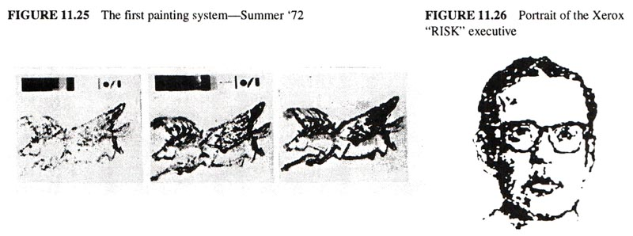That summer while licking my wounds and getting the demo simulations built and going, Butler Lampson, Peter Deutsch, and I worked out a general scheme for emulated HLL machine languages. I liked the B5000 scheme, but Butler did not want to have to decode bytes, and pointed out that since an 8-bit byte had 256 total possibilities, what we should do is map different meanings onto different parts of the "instruction space." This would give us a "poor man's Huffman code" that would be both flexible and simple. All subsequent emulators at PARC used this general scheme.
I also took another pass at the language for the kids. Jeff Rulifson was a big fan of Piaget (and semiotics) and we had many discussions about the "stages" and what iconic thinking might be about. After reading Piaget and especially Jerome Bruner, I was worried that the directly symbolic approach taken by FLEX, LOGO (and the current Smalltalk) would be difficult for the kids to process since evidence existed that the symbolic stage (or mentality) was just starting to switch on. In fact, all of the educators that I admired (including Montessori, Holt, and Suzuki) all seemed to call for a more figurative, more iconic approach. Rudolph Arnheim [Arnheim 69] had written a classic book about visual thinking, and so had the eminent art critic Gombrich [Gombrich **]. It really seemed that something better needed to be done here. GRAIL wasn't it, because its use of imagery was to portray and edit flowcharts, which seemed like a great step backwards. But Rovner's AMBIT-G held considerably more promise [Rovner 68]. It was kind of a visual SNOBOL [Farber 63] and the pattern matching ideas looked like they would work for the more PLANNERlike scheme I was using.
Bill English was still encouraging me to do more reasonable appearing things to get higher credibility, like making budgets, writing plans and milestone notes, so I wrote a plan that proposed over the next few years that we would build a real system on the character generators cum NOVAs that would involve OOP, windows, painting, music, animation, and "iconic programming." The latter was deemed to be hard and would be handled by the usual method for hard problems, namely, give them to grad students.
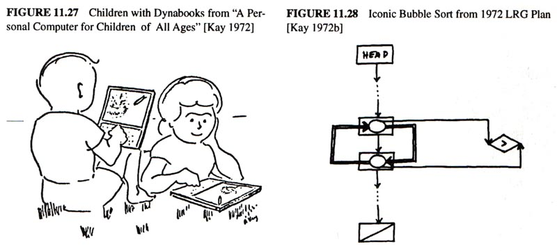In Sept, within a few weeks of each other, two bets happened that changed most of my plans. First, Butler and Chuck came over and asked: "Do you have any money?" I said, "Yes, about $230K for NOVAs and CGs. Why?" They said, "How would you like us to build your little machine for you?" I said, "I'd like it fine. What is it?" Butler said: "I want a '$500 PDP-10', Chuck wants a '10 times faster NOVA', and you want a 'kiddicomp'. What do you need on it?" I told them most of the results we had gotten from the fonts, painting, resolution, animation, and music studies. I asked where this had come from all of a sudden and Butler told me that they wanted to do it anyway, that Executive "X" was away for a few months on a "task force" so maybe they could "Sneak it in", and that Chuck had a bet with Bill Vitic that he could do a whole machine in just 3 months. "Oh," I said.
The second bet had even more surprising results. I had expected that the new Smalltalk would be an iconic language and would take at least two years to invent, but fate intervened. One day, in a typical PARC hallway bullsession, Ted Kaehler, Dan Ingalls, and I were standing around talking about programming languages. The subject of power came up and the two of them wondered how large a language one would have to make to get great power. With as much panache as I could muster, I asserted that you could define the "most powerful language in the world" in "a page of code." They said, "Put up or shut up."
Ted went back to CMU but Dan was still around egging me on. For the next two weeks I got to PARC every morning at four o'clock and worked on the problem until eight, when Dan, joined by Henry Fuchs, John Shoch, and Steve Purcell showed up to kibbitz the morning's work.
I had originally made the boast because McCarthy's self-describing LISP interpreter was written in itself. It was about "a page", and as far as power goes, LISP was the whole nine-yards for functional languages. I was quite sure I could do the same for object-oriented languages plus be able to do a reasonable syntax for the code a la some of the FLEX machine techniques.
It turned out to be more difficult than I had first thought for three reasons. First, I wanted the program to be more like McCarthy's second non-recursive interpreter—the one implemented as a loop that tried to resemble the original 709 implementation of Steve Russell as much as possible. It was more "real". Second, the intertwining of the "parsing" with message receipt—the evaluation of parameters which was handled separately in LISP—required that my object-oriented interpreter re-enter itself "sooner" (in fact, much sooner) than LISP required. And, finally, I was still not clear how send and receive should work with each other.
The first few versions had flaws that were soundly criticized by the group. But by morning 8 or so, a version appeared that seemed to work (see Appendix III for a sketch of how the interpreter was designed). The major differences from the official Smalltalk-72 of a little bit later were that in the first version symbols were byte-coded and the receiving of return-values from a send was symmetric—i.e. receipt could be like parameter binding—this was particular useful for the return of multiple values. For various reasons, this was abandoned in favor of a more expression-oriented functional return style.
Of course, I had gone to considerable pains to avoid doing any "real work" for the bet, but I felt I had proved my point. This had been an interesting holiday from our official "iconic programming" pursuits, and I thought that would be the end of it. Much to my surprise, only a few days later, Dan Ingalls showed me the scheme working on the NOVA. He had coded it up (in BASIC!), added a lot of details, such as a token scanner, a list maker, etc., and there it was—running. As he liked to say: "You just do it and it's done."
It evaluated 3+4 v e r y s l o w l y (it was "glacial", as Butler liked to say) but the answer always came out 7. Well, there was nothing to do but keep going. Dan loved to bootstrap on a system that "always ran," and over the next ten years he made at least 80 major releases of various flavors of Smalltalk.
In November, I presented these ideas and a demonstration of the interpretation scheme to the MIT AI lab. This eventually led to Carl Hewitt's more formal "Actor" approach [Hewitt 73]. In the first Actor paper the resemblance to Smalltalk is at its closest. The paths later diverged, partly because we were much more interested in making things than theorizing, and partly because we had something no one else had: Chuck Thacker's Interim Dynabook (later known as the "ALTO").
Just before Chuck started work on the machine I gave a paper to the National Council of Teachers of English [Kay 72c] on the Dynabook and its potential as a learning and thinking amplifier—the paper was an extensive rotogravure of "20 things to do with a Dynabook" [Kay 72c]. By the time I got back from Minnesota, Stewart Brand's Rolling Stone article about PARC [Brand 1972] and the surrounding hacker community had hit the stands. To our enormous surprise it caused a major furor at Xerox headquarters in Stamford, Connecticut. Though it was a wonderful article that really caught the spirit of the whole culture, Xerox went berserk, forced us to wear badges (over the years many were printed on t-shirts), and severely restricted the kinds of publications that could be made. This was particularly disastrous for LRG, since we were the "lunatic fringe" (so-called by the other computer scientists), were planning to go out to the schools, and needed to share our ideas (and programs) with our colleagues such as Seymour Papert and Don Norman.
Executive "X" apparently heard some harsh words at Stamford about us, because when he returned around Christmas and found out about the interim Dynabook, he got even more angry and tried to kill it. Butler wound up writing a masterful defense of the machine to hold him off, and he went back to his "task force."
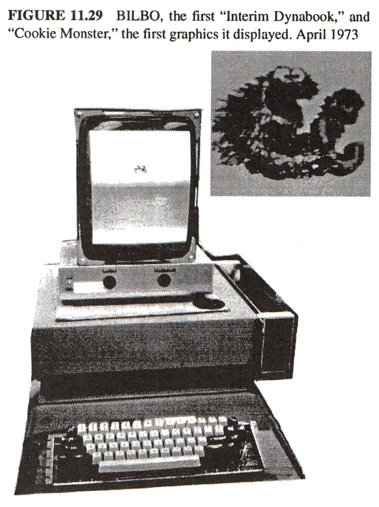Chuck had started his "bet" on November 22, 1972. He and two technicians did all of the machine except for the disk interface which was done by Ed McCreight. It had a ~500,000 pixel (606x808) bitmap display, its microcode instruction rate was about 6 MIPS, it had a grand total of 128k, and the entire machine (exclusive of the memory) was rendered in 160 MSI chips distributed on two cards. It was beautiful [Thacker 1972, 1986]. One of the wonderful features of the machine was "zero-over-head" tasking. It had 16 program counters, one for each task. Condition flags were tied to interesting events (such as "horizontal retrace pulse", and "disk sector pulse", etc.). Lookaside logic scanned the flags while the current instruction was executing and picked the highest priority program counter to fetch from next. The machine never had to wait, and the result was that most hardware functions (particularly those that involved i/o (like feeding the display and handling the disk) could be replaced by microcode. Even the refresh of the MOS dynamic RAM was done by a task. In other words, this was a coroutine architecture. Chuck claimed that he got the idea from a lecture I had given on coroutines a few months before, but I remembered that Wes Clark's TX-2 (the Sketchpad machine) had used the idea first, and I probably mentioned that in the talk.
In early April, just a little over three months from the start, the first Interim Dynabook, known as 'Bilbo,' greeted the world and we had the first bit-map picture on the screen within minutes: the Muppets' Cookie Monster that I had sketched on our painting system.
Soon Dan had bootstrapped Smalltalk across, and for many months it was the sole software system to run on the Interim Dynabook. Appendix I has an "acknowledgements" document I wrote from this time that is interesting in its allocation of credits and the various priorities associated with them. My $230K was enough to get 15 of the original projected 30 machines (over the years some 2000 Interim Dynabooks were actually built). True to Schopenhauer's observation, Executive "X" now decided that the Interim Dynabook was a good idea and he wanted all but two for his lab (I was in the other lab). I had to go to considerable lengths to get our machines back, but finally succeeded.
By this time most of Smalltalk's schemes had been sorted
out into six main ideas that were in accord with the initial
premises in designing the interpreter. The first three principles
are what objects "are about"—how they are seen and
used from "the outside." These did not require any modification
over the years. The last three—objects from the
inside—were tinkered with in every version of Smalltalk
(and in subsequent OOP designs). In this scheme (1 & 4)
imply that classes are objects and that they must be
instances of themself. (6) implies a LISPlike universal syntax,
but with the receiving object as the first item followed by the
message. Thus ci <- de (with subscripting rendered as "○"
and multiplication as "*") means:
| receiver | | message |
| c | | ○ i <- d*e |
The c is bound to the receiving object, and all of ○ i <- d*e is the message to it. The message is made
up of literal token "○", an expression to be evaluated in the sender's context (in this case i), another
literal token <-, followed by an expression to be evaluated in the sender's context (d*e). Since "LISP"
pairs are made from 2 element objects they can be indexed more simply: c hd, c tl, and c hd <- foo, etc.
"Simple" expressions like a+b and 3+4 seemed more troublesome at first. Did it really make sense to think of them as:
| receiver | | message |
| a | | + b |
| 3 | | + 4 |
It seemed silly if only integers were considered, but there are many other metaphoric readings of "+", such as:
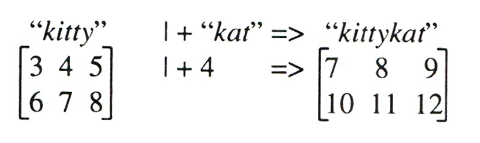 "kittykat" [3 4 5 6 7 8] |+ 4 = [7 8 9 10 11 12]' style="max-width: 216px">This led to a style of finding generic behaviors for message symbols. "Polymorphism" is the official term (I believe derived from Strachey), but it is not really apt as its original meaning applied only to functions that could take more than one type of argument. An example class of objects in Smalltalk-72, such as a model of CONS pairs, would look like:
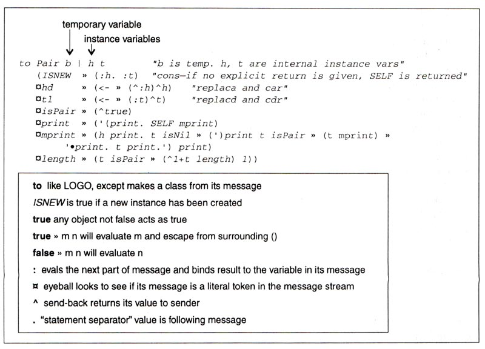Since control is passed to the class before any of the rest of the message is considered—the class can decide not to receive at its discretion—complete protection is retained. Smalltalk-72 objects are "shiny" and impervious to attack. Part of the environment is the binding of the SENDER in the "messenger object" (a generalized activation record) which allows the receiver to determine differential privileges (see Appendix II for more details). This looked ahead to the eventual use of Smalltalk as a network OS (See [Goldstein & Bobrow 1980]), and I don't recall it being used very much in Smalltalk-72.
One of the styles retained from Smalltalk-71 was the comingling of function and class ideas. In other works, Smalltalk-72 classes looked like and could be used as functions, but it was easy to produce an instance (a kind of closure) by using the object ISNEW. Thus factorial could be written "extensionally" as:
to fact n (^if :n=0 then 1 else n*fact n-1)
or "intensionally," as part of class integer:
(... ○! » (^:n=1) » (1) (n-1)!)
Of course, the whole idea of Smalltalk (and OOP in general) is to define everything intensionally. And this was the direction of movement as we learned how to program in the new style. I never liked this syntax (too many parentheses and nestings) and wanted something flatter and more grammar-like as in Smalltalk-71. To the right is an example syntax from the notes of a talk I gave around then. We will see something more like this a few years later in Dan's design for Smalltalk-76. I think something similar happened with LISP—that the "reality" of the straightforward and practical syntax you could program in prevailed against the flights of fancy that never quite got built.
Proposed Smalltalk-72 Syntax
Pair :h :t
hd <- :h
hd » h
tl <- :t
tl » t
isPair » true
print » '( print. SELF mprint.
mprint » h print. if t isNil then ') print
else if t isPair then t mprint
else '● print. t print. ') print
length » 1 + if t isList then t length else 0
The advent of a real Smalltalk on a real machine started off an explosion of parallel paths that are too difficult to intertwine in strict historical order. Let me first present the general development of the Smalltalk-72 system up to the transition to Smalltalk-76, and then follow that with the several years of work with children that were the primary motivation for the project. The Smalltalk-72 interpreter on the Interim Dynabook was not exactly zippy ("majestic" was Butler's pronouncement), but was easy to change and quite fast enough for many real-time interactive systems to be built in it.
Overlapping windows were the first project tackled (with Diana Merry) after writing the code to read the keyboard and create a string of text. Diana built an early version of a bit field block transfer (bitblt) for displaying variable pitch fonts and generally writing on the display. The first window versions were done as real 2½D draggable objects that were just a little too slow to be useful. We decided to wait until Steve Purcell got his animation system going to do it right, and opted for the style that is still in use today, which is more like "2¼D". Windows were perhaps the most redesigned and reimplemented class in Smalltalk because we didn't quite have enough compute power to just do the continual viewing to "world coordinates" and refreshing that my former Utah colleagues were starting to experiment with on the flight simulator projects at Evans & Sutherland. This is a simple, powerful model but it is difficult to do in real-time even in 2½D. The first practical windows in Smalltalk used the GRAIL conventions of sensitive corners for moving, resizing, cloning, and closing. Window scheduling used a simple "loopless" control scheme that threaded all of the windows together.
One of the next classes to be implemented on the Interim Dynabook (after the basics of numbers, strings, etc.) was an object-oriented version of the LOGO turtle implemented by Ted. This could make many turtle instances that were used both for drawing and as a kind of value for graphics transformations. Dan created a class of "commander" turtles that could control a troop of turtles. Soon the turtles were made so they could be clipped by the windows.
John Shoch built a mouse-driven structured editor for Smalltalk code.
Larry Tesler (then working for POLOS) did not like the modiness and general approach of NLS, and he wanted both to show the former NLSers an alternative and to conduct some user studies (almost unheard of in those days) about editing. This led to his programming miniMOUSE in Smalltalk, the first real WYSIWYG galley editor at PARC. It was modeless (almost) and fun to use, not just for us but for the many people he tested it on (I ran the camera for the movies we took and remember their delight and enjoyment). miniMOUSE quickly became an alternate editor for Smalltalk code and some of the best demos we ever gave used it.
One of the "small program" projects I tried on an adult class in the Spring of '74 was a one-page paragraph editor. It turned out to be too complicated, but the example I did to show them was completely modeless (it was in the air) and became the basis for much of the Smalltalk text work over the next few years. Most of the improvements were made by Dan and Diana Merry. Of course, objects mean multi-media documents, you almost get them for free. Early on we realized that in such a document, each component object should handle its own editing chores. Steve Weyer built some of the earliest multi-media documents, whose range was greatly and variously expanded over the years by Bob Flegal, Diana Merry, Larry Tesler, Tim Mott, and Trygve Reenskaug.
Steve Weyer and I devised Findit, a "retrieval by example" interface that used the analogy of classes to their instances to form retrieval requests. This was used for many years by the PARC library to control circulation.
The sampling synthesis music I had developed on the NOVA could generate 3 high-quality real-time voices. Bob Shur and Chuck Thacker transferred the scheme to the Interim Dynabook and achieved 12 voices in real-time. The 256 bit generalized input that we had specified for low speed devices (used for the mouse and keyboard) made it easy to connect 154 more to wire up two organ keyboards and a pedal. Effects such as portamento and decay were programmed. Ted Kaehler wrote TWANG, a music capture and editing system, using a tablature notation that we devised to make music clear to children [Kay 1977a]. One of the things that was hard to do with sampling was the voltage controlled oscillator (VCO) effects that were popular on the "Well Tempered Synthesizer." A summer later, Steve Saunders, another of our bright summer students, was challenged to find a way to accomplish John Chowning's very non-real-time FM synthesis in real-time on the ID. He had to find a completely different way to think of it than "FM", and succeeded brilliantly with 8 real-time voices that were integrated into TWANG [Saunders *].
Chris Jeffers (who was a musician and educator, not a computer scientist) knocked us out with OPUS, the first real-time score capturing system. Unlike most systems today it did not require metronomic playing but instead took a first pass looking for strong and weak beats (the phrasing) to establish a local model of the likely tempo fluctuations and then used curve fitting and extrapolation to make judgments about just where in the measure, and for what time value, a given note had been struck.
The animations on the NOVA ran 3-5 objects at about 2-3 frames per second. Fast enough for the phi phenomenon to work (if double buffering was used), but we wanted "Disney rates" of 10-15 frames a second for 10 or more large objects and many more smaller ones. This task was put into the ingenious hands of Steve Purcell. By the fall of '73 he could demo 80 ping-pong balls and 10 flying horses running at 10 frames per second in 2½D. His next task was to make the demo into a general systems facility from which we could construct animation systems. His CHAOS system started working in May '74, just in time for summer visitors Ron Baecker, Tom Horseeley, and professional animator Eric Martin to visit and build SHAZAM a marvelously capable and simple animation system based on Ron's GENESYS thesis project on the TX-2 in the late sixties [Baecker 69].
The main thesis project during this time was Dave Smith's PYGMALION [Smith 75], an essay into iconic programming (no, we hadn't quite forgotten). One programmed by showing the system how changes should be made, much as one would illustrate on a blackboard with another programmer. This program became the starting place from which many subsequent "programming by example" systems took off.
I should say something about the size of these programs. PYGMALION was the largest program ever written in Smalltalk-72. It was about 20 pages of code—all that would fit in the interim dynabook ALTO—and is given in full in Smith's thesis. All of the other applications were smaller. For example, the SHAZAM animation system was written and revised several times in the summer of 1974, and finally wound up as a 5-6 page application which included its icon-controlled multiwindowed user interface.
Given its roots in simulation languages, it was easy to write in a few pages, Simpula, a simple version of the SIMULA sequencing set approach to scheduling. By this time we had decided that coroutines could be rendered more cleanly by scheduling individual methods as separate simulation phases. The generic SIMULA example was a job shop. This could be generalized into many useful forms such as a hospital with departments of resources serving patients (see to the right). The children did not care for hospitals but saw that they could model amusement parks, like Disneyland, their schools, the stores they and their parents shopped in, and so forth. Later this model formed the basis of the Smalltalk Sim-kit, a high-level end-user programming environment (described ahead).
(until Return or Delete do
('character <- display <- keyboard.
character = ret » (Return)
character = del » (Delete)
)
then case
Return: ('deal with this normal exit')
Delete: ('handle the abnormal exit'))
Many nice "computer sciency" constructs were easy to make in Smalltalk-72. For example, one of the controversies of the day was whether to have gotos or not (we didn't), and if not, how could certain very useful control structures—such as multiple exits from a loop—be specified? Chuck Zahn at SLAC proposed an event-driven case structure in which a set of events could be defined so that when an event is encountered, the loop will be exited and the event will select a statement in a case block [Zahn 1974, Knuth 1974]. Suppose we want to write a simple loop that reads characters from the keyboard and outputs them to a display. We want it to exit normally when the <return> key is struck and with an error if the <delete> key is hit. Appendix IV shows how John Shoch defined this control structure.
Smalltalk-74 (sometimes known as FastTalk) was a version of Smalltalk-72 incorporating major improvements which included providing a real "messenger" object, message dictionaries for classes (a step towards real class objects), Diana Merry's bitblt (the now famous 2D graphics operator for bitmap graphics) redesigned by Dan and implemented in microcode, and a better, more general window interface. Dave Robson while a student at UC Irvine had heard of our project and made a pretty good stab at implementing an OOPL. We invited him for a summer and never let him go back—he was a great help in formulating an official semantics for Smalltalk.
The crowning addition was the OOZE (Object Oriented Zoned Environment) virtual memory system that served Smalltalk-74, and more importantly, Smalltalk-76 [Ing 78, Kae *]. The ALTO was not very large (128-256K), especially with its page-sized display (64k), and even with small programs, we soon ran out of storage. The 2.4 megabyte model 30 disk drive was faster and larger than a floppy and slower and smaller than today's hard drives. It was quite similar to the HP direct contact disk of the FLEX machine on which I had tried a fine-grain version of the B5000 segment swapper. It had not worked as well as I wanted, despite a few good ideas as to how to choose objects when purging. When the gang wanted to adopt this basic scheme, I said: "But I never got it to work well." I remember Ted Kaehler saying, "Don't worry, we'll make it work!"
The basic idea in all of these systems is to be able to gather the most comprehensive possible working set of objects. This is most easily accomplished by swapping individual objects. Now the problem becomes the overhead of purging non-working set objects to make room for the ones that are needed. (Paging sometimes works better for this part because you can get more than one object (OOZE) in each disk touch.) Two ideas help a lot. First, Butler's insight in the GENIE OS that it was worthwhile to expend a small percentage of time purging dirty objects to make core as clean as possible [Lampson 1966]. Thus crashes tend not to hurt as much and there is always clean storage to fetch pages or objects from the disk into. The other is one from the FLEX system in which I set up a stochastic decision mechanism (based on the class of an object) that determined during a purge whether or not to throw an object out. This had two benefits: important objects tended not to go out, and a mistake would just bring it back in again with the distribution insuring a low probability that the object would be purged again soon.
The other problem that had to be taken care of was object-pointer integrity (and this is where I had failed in the FLEX machine to come up with a good enough solution). What was needed really was a complete transaction, a brand new technique (thought up by Butler?) that ensured recovery regardless of when the system crashed. This was called "cosmic ray protection" as the early ALTOS had a way of just crashing once or twice a day for no discernible good reason. This, by the way did not particularly bother anyone as it was fairly easy to come up with undo and replay mechanisms to get around the cosmic rays. For pointer-based systems that had automatic storage management, this was a bit more tricky.
Ted and Dan decided to control storage using a Resident Object Table that was the only place machine addresses for objects would be found. Other useful information was stashed there as well to help LRU aging. Purging was done in background by picking a class, positioning the disk to its instances (all of a particular class were stored together), then running through the ROT to find the dirty ones in storage and stream them out. This was pretty efficient and, true to Butler's insight, furnished a good sized pool of clean storage that could be overwritten. The key to the design though (and the implementation of the transaction mechanism) was the checkpointing scheme they came up with. This insured that there was a recoverable image no more than a few seconds old, regardless of when a crash might occur. OOZE swapped objects in just 80kb of working storage and could handle about 65K objects (up to several megabytes worth, more than enough for the entire system, its interface, and its applications).
This is probably a good place to comment on the difference between what we thought of as OOP-style and the superficial encapsulation called "abstract data types" that was just starting to be investigated in academic circles. Our early "LISP-pair" definition is an example of an abstract data type because it preserves the "field access" and "field rebinding" that is the hallmark of a data structure. Considerable work in the 60s was concerned with generalizing such structures [DSP *]. The "official" computer science world started to regard Simula as a possible vehicle for defining abstract data types (even by one of its inventors [Dahl 1970]), and it formed much of the later backbone of ADA. This led to the ubiquitous stack data-type example in hundreds of papers. To put it mildly, we were quite amazed at this, since to us, what Simula had whispered was something much stronger than simply reimplementing a weak and ad hoc idea. What I got from Simula was that you could now replace bindings and assignment with goals. The last thing you wanted any programmer to do is mess with internal state even if presented figuratively. Instead, the objects should be presented as sites of higher level behaviors more appropriate for use as dynamic components.
Even the way we taught children (cf. ahead) reflected this way of looking at objects. Not too surprisingly this approach has considerable bearing on the ease of programming, the size of the code needed, the integrity of the design, etc. It is unfortunate that much of what is called "object-oriented programming" today is simply old style programming with fancier constructs. Many programs are loaded with "assignment-style" operations now done by more expensive attached procedures.
Where does the special efficiency of object-oriented design come from? This is a good question given that it can be viewed as a slightly different way to apply procedures to data-structures. Part of the effect comes from a much clearer way to represent a complex system. Here, the constraints are as useful as the generalities. Four techniques used together—persistent state, polymorphism, instantiation, and methods-as-goals for the object—account for much of the power. None of these require an "object-oriented language" to be employed—ALGOL 68 can almost be turned to this style—an OOPL merely focuses the designer's mind in a particular fruitful direction. However, doing encapsulation right is a commitment not just to abstraction of state, but to eliminate state oriented metaphors from programming.
Perhaps the most important principle—again derived from operating system architectures—is that when you give someone a structure, rarely do you want them to have unlimited privileges with it. Just doing type-matching isn't even close to what's needed. Nor is it terribly useful to have some objects protected and others not. Make them all first class citizens and protect all.
I believe that the much smaller size of a good OOP system comes not just by being gently forced to come up with a more thought out design. I think it also has to do with the "bang per line of code" you can get with OOP. The object carries with it a lot of significance and intention, its methods suggest the strongest kinds of goals it can carry out, its superclasses can add up to much more code-functionality being invoked than most procedures-on-data-structures. Assignment statements—even abstract ones—express very low-level goals, and more of them will be needed to get anything done. Generally, we don't want the programmer to be messing around with state, whether simulated or not. The ability to instantiate an object has a considerable effect on code size as well. Another way to think of all this is: though the late-binding of automatic storage allocations doesn't do anything a programmer can't do, its presence leads both to simpler and more powerful code. OOP is a late binding strategy for many things and all of them together hold off fragility and size explosion much longer than the older methodologies. In other words, human programmers aren't Turing machines—and the less their programming systems require Turing machine techniques the better.
Now that I have summarized the "adult" activities (we were actually only semiadults) in Smalltalk up to 1976, let me return to the summer of '73, when we were ready to start experiments with children. None of us knew anything about working with children, but we knew that Adele Goldberg and Steve Weyer who were then with Pat Suppes at Stanford had done quite a bit and we were able to entice them to join us.
Since we had no idea how to teach object-oriented programming to children (or anyone else), the first experiments Adele did mimicked LOGO turtle graphics, and she got what appeared to be very similar results. That is to say, the children could get the turtle to draw pictures on the screen, but there seemed to be little happening beyond surface effects. At that time I felt that since the content of personal computing was interactive tools, that the content of this new kind of authoring literacy should be the creation of interactive tools by the children. Procedural turtle graphics just wasn't it.
Then Adele came up with a brilliant approach to teaching Smalltalk as an object-oriented language: the "Joe Book." I believe this was partly influenced by Minsky's idea that you should teach a programming language holistically from working examples of serious programs.
Several instances of the class box are created and sent messages, culminating with a simple multiprocess animation. After getting kids to guess what a box might be like—they could come surprisingly close—they would be shown:
to box | x y size tilt (○draw » (@place x y turn tilt. square size. ○undraw » (@ white. SELF draw. @black) ○turn » (SELF undraw. 'tilt <- tilt + :. SELF draw) ○grow » (SELF undraw. 'size <- size + :. SELF draw) ISNEW » (SELF undraw. 'size <- size + :. SELF draw)
What was so wonderful about this idea were the myriad of children's projects that could spring off the humble boxes. And some of the earliest were tools! This was when we got really excited. For example, Marian Goldeen's (12 yrs old) painting system was a full-fledged tool. A few years later, so was Susan Hamet's (12 yrs old) OOP illustration system (with a design that was like the MacDraw to come). Two more were Bruce Horn's (15 yrs old) music score capture system and Steve Putz's (15 yrs old) circuit design system. Looking back, this could be called another example in computer science of the "early success syndrome." The successes were real, but they weren't as general as we thought. They wouldn't extend into the future as strongly as we hoped. The children were chosen from the Palo Alto schools (hardly an average background) and we tended to be much more excited about the successes than the difficulties. In part, what we were seeing was the "hacker phenomenon," that, for any given pursuit, a particular 5% of the population will jump into it naturally, while the 80% or so who can learn it in time do not find it at all natural.
We had a dim sense of this, but we kept on having relative successes. We could definitely see that learning the mechanics of the system was not a major problem. The children could get most of it themselves by swarming over the ALTOS with Adele's JOE book. The problem seemed more to be that of design.
It started to hit home in the Spring of '74 after I taught Smalltalk to 20 PARC nonprogrammer adults. They were able to get through the initial material faster than the children, but just as it looked like an overwhelming success was at hand, they started to crash on problems that didn't look to me to be much harder than the ones they had just been doing well on. One of them was a project thought up by one of the adults, which was to make a little database system that could act like a card file or rolodex. They couldn't even come close to programming it. I was very surprised because I "knew" that such a project was well below the mythical "two pages" for end-users we were working within. That night I wrote it out, and the next day I showed all of them how to do it. Still, none of them were able to do it by themselves. Later, I sat in the room pondering the board from my talk. Finally, I counted the number of nonobvious ideas in this little program. They came to 17. And some of them were like the concept of the arch in building design: very hard to discover, if you don't already know them.
The connection to literacy was painfully clear. It isn't enough to just learn to read and write. There is also a literature that renders ideas. Language is used to read and write about them, but at some point the organization of ideas starts to dominate mere language abilities. And it helps greatly to have some powerful ideas under one's belt to better acquire more powerful ideas [Papert 70s]. So, we decided we should teach design. And Adele came up with another brilliant stroke to deal with this. She decided that what was needed was an intermediary between the vague ideas about the problem and the very detailed writing and debugging that had to be done to get it to run in Smalltalk. She called the intermediary forms design templates.
Using these the children could look at a situation they wanted to simulate, and decompose it into classes and messages without having to worry just how a method would work. The method planning could then be done informally in English, and these notes would later serve as commentaries and guides to the writing of the actual code. This was a terrific idea, and it worked very well.
But not enough to satisfy us. As Adele liked to point out, it is hard to claim success if only some of the children are successful—and if a maximum effort of both children and teachers was required to get the successes to happen. Real pedagogy has to work in much less idealistic settings and be considerably more robust. Still, some successes are qualitatively different from no successes. We wanted more, and started to push on the inheritance idea as a way to let novices build on frameworks that could only be designed by experts. We had good reason to believe that this could work because we had been impressed by Lisa van Stone's ability to make significant changes to SHAZAM (the five or six page Smalltalk animation tool done by relatively expert adults). Unfortunately, inheritance—though an incredibly powerful technique—has turned out to be very difficult for novices (and even professionals) to deal with.
At this point, let me do a look back from the vantage point of today. I'm now pretty much convinced that our design template approach was a good one after all. We just didn't apply it longitudinally enough. I mean by this that there is now a large accumulation of results from many attempts to teach novices programming [Soloway 1989]. They all have similar stories that seem to have little to do with the various features of the programming languages used, and everything to do with the difficulties novices have thinking the special way that good programmers think. Even with a much better interface than we had then (and have today), it is likely that this really is actually more like writing than we wanted it to be. Namely, for the "80%", it really has to be learned gradually over a period of years in order to build up the structures that need to be there for design and solution look-ahead.41
The problem is not to get the kids to do stuff—they love to do, even when they are not sure exactly what they are doing. This correlates well with studies of early learning of language, when much rehearsal is done regardless of whether content is involved. Just doing seems to help. What is difficult is to determine what ideas to put forth and how deeply they should penetrate at a given child's developmental level. This confusion still persists for reading and writing of natural language—and for mathematics—despite centuries of experience. And it is the main hurdle for teaching children programming. When, in what order and depth, and how should the powerful ideas be taught?
Should we even try to teach programming? I have met hundreds of programmers in the last 30 years and can see no discernible influence of programming on their general ability to think well or to take an enlightened stance on human knowledge. If anything, the opposite is true. Expert knowledge often remains rooted in the environments in which it was first learned—and most metaphorical extensions result in misleading analogies. A remarkable number of artists, scientists, philosophers are quite dull outside of their specialty (and one suspects within it as well). The first siren's song we need to be wary of is the one that promises a connection between an interesting pursuit and interesting thoughts. The music is not in the piano, and it is possible to graduate Juilliard without finding or feeling it.
I have also met a few people for whom computing provides an important new metaphor for thinking about human knowledge and reach. But something else was needed besides computing for enlightenment to happen.
Tools provide a path, a context, and almost an excuse for developing enlightenment, but no tool ever contained it or can dispense it. Cesare Pavese observed: to know the world we must construct it. In other words, we make not just to have, but to know. But the having can happen without most of the knowing taking place.
Another way to look at this is that knowledge is in its least interesting state when it is first being learned. The representations—whether markings, allusions, or physical controls—get in the way (almost take over as goals) and must be laboriously and painfully interpreted. From here there are several useful paths, two of which are important and intertwined.
The first is fluency, which in part is the process of building mental structures that disappear the interpretation of the representations. The letters and words of a sentence are experienced as meaning rather than markings, the tennis racquet or keyboard becomes an extension of one's body, and so forth. If carried further one eventually becomes a kind of expert—but without deep knowledge in other areas, attempts to generalize are usually too crisp and ill formed.
The second path is towards taking the knowledge as a metaphor than can illuminate other areas. But without fluency it is more likely that prior knowledge will hold sway and the metaphors from this side will be fuzzy and misleading.
The "trick," and I think that this is what liberal arts educations is supposed to be about, is to get fluent and deep while building relationships with other fluent deep knowledge. Our society has lowered its aims so far that it is happy with "increases in scores" without daring to inquire whether any important threshold has been crossed. Being able to read a warning on a pill bottle or write about a summer vacation is not literacy and our society should not treat it so. Literacy, for example, is being able to fluently read and follow the 50 page argument in Paine's Common Sense and being able (and happy) to fluently write a critique or defense of it. Another kind of 20th century literacy is being able to hear about a new fatal contagious incurable disease and instantly know that a disastrous exponential relationship holds and early action is of the highest priority. Another kind of literacy would take citizens to their personal computers where they can fluently and without pain build a systems simulation of the disease to use as a comparison against further information.
At the liberal arts level we would expect that connections between each of the fluencies would form truly powerful metaphors for considering ideas in the light of others.
The reason, therefore, that many of us want children to understand computing deeply and fluently is that like literature, mathematics, science, music, and art, it carries special ways of thinking about situations that in contrast with other knowledge and other ways of thinking critically boost our ability to understand our world.
We did not know then, and I'm sorry to say from 15 years later, that these critical questions still do not yet have really useful answers. But there are some indications. Even very young children can understand and use interactive transformational tools. The first ones are their hands! They can readily extend these experiences to computer objects and making changes to them. They can often imagine what a proposed change will do and not be surprised at the result. Two and three year olds can use the Smalltalk-style interface and manipulate object-oriented graphics. Third graders can (in a few days) learn more than 50 features—most of these are transformational tools—of a new system including its user interface. They can answer any question whose answer requires the application of just one of these tools. But it is extremely difficult for them to answer any question that requires two or more transformations. Yet they have no problem applying sequences of transformations, exploring "forward." It is for conceiving and achieving even modest goals requiring several changes that they almost completely lack navigation abilities.
It seems that what needs to be learned and taught is now to package up transformations in twos and threes in a manner similar to learning a strategic game like checkers. The vague sense of a "threesome" pointing towards one's goal can be a set up for the more detailed work that is needed to accomplish it. This art is possible for a large percentage of the population, but for most, it will need to be learned gradually over several years.
By the end of 1975 I felt that we were losing our balance—that the "Dynabook for children" idea was slowly dimming out—or perhaps starting to be overwhelmed by professional needs. In January 1976, I took the whole group to Pajaro Dunes for a three day offsite to bring up the issues and try to reset the compass. It was called "Let's Burn Our Disk Packs." There were no shouting matches, the group liked (I would go so far to say: loved) each other too much for that. But we were troubled. I used the old aphorism that "no biological organism can live in its own waste products" to plead for a really fresh start: a hw-sw system very different from the ALTO and Smalltalk. One thing we all did agree on was that the current Smalltalk's power did not match our various levels of aspiration. I thought we needed something different, as I did not see how OOP by itself was going to solve our end-user problems. Others, particularly some of the grad students, really wanted a better Smalltalk that was faster and could be used for bigger problems. I think Dan felt that a better Smalltalk could be the vehicle for the different system I wanted, but could not describe clearly. The meeting was not a disaster, and we went back to PARC still friends and colleagues, but the absolute cohesiveness of the first four years never rejelled. I started designing a new small machine and language I called the NoteTaker and Dan started to design Smalltalk-76.
The reason I wanted to "burn the disk packs" is that I had a very McLuhanish feeling about media and environments: that once we've shaped tools, in his words, they turn around and "reshape us." Of course this is a great idea if the tools are really good and aimed squarely at the issues in question. But the other edge of the sword cuts as deep—that inadequate tools and environments still reshape our thinking in spite of their problems, in part, because we want paradigms to guide our goals. Strong paradigms like LISP and Smalltalk are so compelling that they eat their young: when you look at an application in either of these two systems, they resemble the systems themselves, not a new idea. When I looked at Smalltalk in 1975, I was looking at something great, but I did not see an enduser language, I did not see a solution to the original goal of a "reading" and "writing" computer medium for children. I wanted to stop, dynamite everything and start from scratch again.
The NoteTaker was to be a "laptop" that could be built in a few years using the (almost) available 16K RAMS (a vast improvement over the 1K RAMS that the ALTO employed). A laptop couldn't use a mouse (which I hated anyway) and a tablet seemed awkward (not a lot of room and the stylus could flop out of reach when let go), so I came up with an embedded pointing device I called a "tabmouse." It was a relative pointer and had an up sensor so it could be stroked like a mouse and would also stay where you left it, but it felt like a stylus and used a pantograph mechanism that eliminated the annoying hysteresis bias in the x and y directions that made it hard to use a mouse as a pen. I planned to use a multiprocessor architecture of slow but highly integrated chips as originally specified for the Dynabook and wanted a new bytecoded interpreter for a friendlier and simpler system than Smalltalk-72.
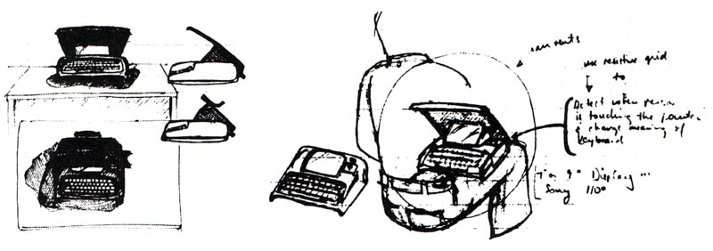Meanwhile Dan was proceeding with his total revamp of Smalltalk and along somewhat similar lines [In 78]. The first major thing that needed to be done was to get rid of the function/class dualism in favor of a completely intensional definition with every piece of code as an intrinsic method. We had wanted that from the beginning, (and most of the code was already written that way). There were a variety of strong desires for a real inheritance mechanism from Adele and me, from Larry Tesler, who was working on desktop publishing, and from the grad students. Dan had to find a better way than Simula's very rigid compile-time conception. It was time to make good on the idea that "everything was an object," which included all the internal "systems" objects like "activation records," etc. We were all agreed that the flexible syntax of the earlier Smalltalks was too flexible, and this level of extensibility was not desirable. All of the extensions we liked used various keyword schemes, so Dan came up with a combination keyword/operator syntax that was very flexible, but allowed the language to be read unambiguously by both humans and the machine. This allowed a FLEX machine-like byte-code compiler and efficient interpreter to be defined that ran up to 180 times as fast as the previous direct interpreter. The OOZE VM system could be modified to handle the new objects and its capacity was well matched to the ALTO's RAM and disk.
A word about inheritance. Simula-I had neither classes as objects nor inheritance. Simula-67 added the latter as a generalization to the ALGOL-60 <block> structure. This was a great idea. But it did have some drawbacks: minor ones like name clashes in multiple threaded lists (no one uses threaded lists anymore), and major ones like rigidity in the extended type structures, need to qualify types, only a single path of inheritance, and difficulty in adapting to an interactive development system with incremental compiling and other needs for instant changes. Then there were a host of problems that were really outside the scope of Simula's goals: having to do with various kinds of modeling and inferencing that were of interest in the world of artificial intelligence. For example, not all useful questions could be answered by following a static chain. Some of them required a kind of "inheritance" or "inferencing" through dynamically bound "parts" (i.e. instance variables). Multiple inheritance also looked important but the corresponding possible clashes between methods of the same name in different superclasses looked difficult to handle, and so forth.
On the other hand, since things can be done with a dynamic language that are difficult with a statically compiled one, I just decided to leave inheritance out as a feature in Smalltalk-72, knowing that we could simulate it back using Smalltalk's LISPlike flexibility. The biggest contributor to these AI ideas was Larry Tesler who used what is now called "slot inheritance" extensively in his various versions of early desktop publishing systems. Nowadays, this would be called a "delegation-style" inheritance scheme [Liberman 84]. Danny Bobrow and Terry Winograd during this period were designing a "frame-based" AI language called KRL which was "object-oriented" and I believe was influenced by early Smalltalk. It had a kind of multiple inheritance—called perspectives—which permitted an object to play multiple roles in a very clean way. Many of these ideas a few years later went into PIE, an interesting extension of Smalltalk to networks and higher level descriptions by Ira Goldstein and Bobrow [Goldstein & Bobrow 1980].
By the time Smalltalk-76 came along, Dan Ingalls had come up with a scheme that was Simula-like in its semantics but could be incrementally changed on the fly to be in accord with our goals of close interaction. I was not completely thrilled with it because it seemed that we needed a better theory about inheritance entirely (and still do). For example, inheritance and instancing (which is a kind of inheritance) muddles both pragmatics (such as factoring code to save space) and semantics (used for way too many tasks such as: specialization, generalization, speciation, etc.) Alan Borning employed a multiple inheritance scheme in Thinglab [Borning 1977] which was implemented in Smalltalk-76. But no comprehensive and clean multiple inheritance scheme appeared that was compelling enough to surmount Dan's original Simula-like design.
Meanwhile, the running battle with Xerox continued. There were now about 500 ALTOs linked with Ethernets to each other and to Laserprinter and file servers, that used ALTOs as controllers. I wrote many memos to the Xerox planners trying to get them to make plans that included personal computing as one of their main directions. Here is an example:
A Brief Update Of My 1971 Pendery Paper
In the 1990's there will be millions of personal computers. They will be the size of notebooks of today, have high-resolution flat-screen reflective displays, weigh less than ten pounds, have ten to twenty times the computing and storage capacity of an Alto. Let's call them Dynabooks.
The purchase price will be about that of a color television set of the era, although most of the machines will be given away by manufacturers who will be marketing the content rather than the container of personal computing.
...
Though the Dynabook will have considerable local storage and will do most computing locally, it will spend a large percentage of its time hooked to various large, global information utilities which will permit communication with others of ideas, data, working models, as well as the daily chit-chat that organizations need in order to function. The communications link will be by private and public wire and by packet radio, Dynabooks will also by used as servers in the information utilities. They will have enough power to be entirely shaped by software.
...
In other words, the material of a computer system is the computer itself, all of the content and function is fashioned in software.
There are two important guidelines to be drawn from this:
Xerox must take these several points seriously if it is to survive and prosper in its new business area of information media. If it does, the company has an excellent chance for several reasons:
In 1976, Chuck Thacker designed the ALTO III that would use the new 16k chips and be able to fit on a desktop. It could be marketed for about what the large cumbersome special purpose "word-processors" cost, yet could do so much more. Nevertheless, in August of 1976, Xerox made a fateful decision: not to bring the ALTO III to market. This was a huge blow to many of us—even I, who had never really, really thought of the ALTO as anything but a stepping stone to the "real thing." In 1992, the world market for personal computers and workstations was $90 million—twice as much as the mainframe and mini market, and many times Xerox's 1992 gross. The most successful company of this era—Microsoft—is not a hardware company, but a software company.
I have been asked by several of the reviewers to say more about the development of the "Smalltalk-style" overlapping window user interface since there are now more than 20 million computers in the world that use its descendants. A decent history would be as long as this chapter, and none has been written so far. There is a summary of some of the ideas in [Kay 89]—let me add a few more points.
All of the elements eventually used in the Smalltalk user interface were already to be found in the sixties—as different ways to access and invoke the functionality provided by an interactive system. The two major centers of ideas were Lincoln Labs and RAND corp—both ARPA funded. The big shift that consolidated these ideas into a powerful theory and long-lived examples came because the LRG focus was on children. Hence, we were thinking about learning as being one of the main effects we wanted to have happen. Early on, this led to a 90 degree rotation of the purpose of the user interface from "access to functionality" to "environment in which users learn by doing." This new stance could now respond to the echoes of Montessori and Dewey, particularly the former, and got me, on rereading Jerome Bruner, to think beyond the children's curriculum to a "curriculum of the user interface."
The particular aim of LRG was to find the equivalent of writing—that is learning and thinking by doing in a medium—our new "pocket universe." For various reasons I had settled on "iconic programming" as the way to achieve this, drawing on the iconic representations used by many ARPA projects in the sixties. My friend Nicholas Negroponte, an architect, was extremely interested in how environments affected peoples' work and creativity. He was interested in embedding the new computer magic in familiar surroundings. I had quite a bit of theatrical experience in a past life, and remembered Coleridge's adage that "people attend 'bad theatre' hoping to forget, people attend 'good theatre' aching to remember." In other words, it is the ability to evoke the audience's own intelligence and experiences that makes theatre work.
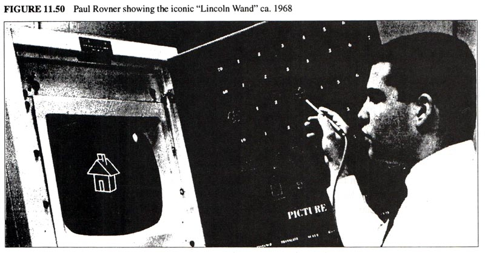 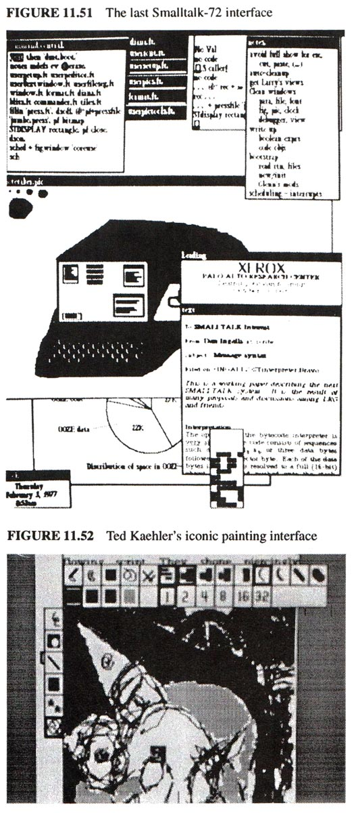Putting all this together, we want an apparently free environment in which exploration causes desired sequences to happen (Montessori); one that allows kinesthetic, iconic, and symbolic learning—"doing with images makes symbols" (Piaget & Bruner); the user is never trapped in a mode (GRAIL); the magic is embedded in the familiar (Negroponte); and which acts as a magnifying mirror for the user's own intelligence (Coleridge). It would be a great finish to this story to say that having articulated this we were able to move straightforwardly to the design as we know it today. In fact, the UI design work happened in fits and starts in between feeding Smalltalk itself, designing children's experiments, trying to understand iconic construction, and just playing around. In spite of this meandering, the context almost forced a good design to turn out anyway. Just about everyone at PARC at this time had opinions about the UI, ours and theirs. It is impossible to give detailed credit for the hundreds of ideas and discussions. However, the consolidation can certainly be attributed to Dan Ingalls, for listening to everyone, contributing original ideas, and constantly building a design for user testing. I had a fair amount to do with setting the context, inventing overlapping windows, etc., and Adele and I designed most of the experiments. Beyond that, Ted Kaehler, and visitor Ron Baecker made highly valuable contributions. Dave Smith designed SmallStar, the prototype iconic interface for the Xerox Star product [Smith 83].
Meanwhile, I had gotten Doug Fairbairn interested in the Notetaker. He designed a wonderful "smart bus" that could efficiently handle slow multiple processors and the system looked very promising, even though most of the rest of PARC thought I was nuts to abandon the fast bipolar hw of the ALTO. But I couldn't see that bipolar was ever going to make it into a laptop or Dynabook. On the other hand I hated the 8-bit micros that were just starting to appear, because of the silliness and naivete of their designs—there was no hint that anyone who had ever designed software was involved.
Dan finished the Smalltalk-76 design November, and he, Dave Robson, Ted Kaehler, and Diana Merry, successfully implemented the system from scratch (which included rewriting all of the existing class definitions) in just seven months. this was such a wonderful achievement that I was bowled over in spite of my wanting to start over. It was fast, lively, could handle "big" problems, and was great fun. The system consisted of about 50 classes described in about 180 pages of source code. This included all of the OS functions, files, printing and other Ethernet services, the window interface, editors, graphics and painting systems, and two new contributions by Larry Tesler, the famous browsers for static methods in the inheritance hierarchy and dynamic contexts for debugging in the runtime environment. In every way it was the consolidation of all of our ideas and yearning about Smalltalk in one integrated package. All Smalltalks since have resembled this conception very closely. In many ways, as Tony Hoare once remarked about Algol, Dan's Smalltalk-76 was a great improvement on its successors!
Here are two stylish ST-76 classes written by Dan.
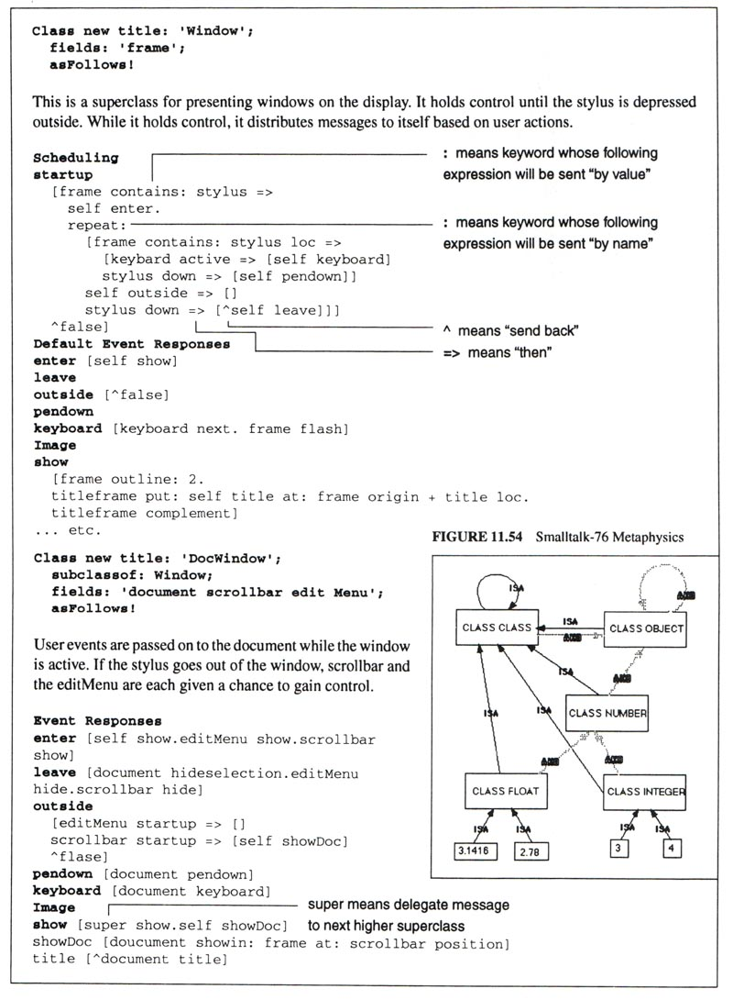Notice, particularly in class Window, how the code is expressed as goals for other objects (or itself) to achieve. The superclass Window's main job is to notice events and distribute them as messages to its subclasses. In the example, a document window (a subclass of DocWindow) is going to deal with the effects of user interactions. The Window class will notice that the keyboard is active and send a message to itself which will be intercepted by the subclass method. If there is no method the character will be thrown away and the window will flash. In this case, it finds DocWindow method: keyboard, which tells the held document to check it out.
In January of 1978 Smalltalk-76 had its first real test. CSL had invited the top ten executives of Xerox to PARC for a two day seminar on software, with a special emphasis on complexity and what could be done about it. LRG got asked to give them a hands-on experience in end-user programming so "they could do 'something real' over two 1½ hour sessions." We immediately decided not to teach them Smalltalk-76 (my "burn our disk packs" point in spades), but to create in two months in Smalltalk-76 a rich system especially tailored for adult nonexpert users (Dan's point in trumps). We took our "Simpula" job shop simulation model as a starting point and decided to build a user interface for a generalized job shop simulation tool that the executives could make into specific dynamic simulations that would act out their changing states by animating graphics on the screen. We called it the Smalltalk SimKit. This was a maximum effort and everyone pitched in. Adele became the design leader in spite of the very recent appearance of a new baby. I have a priceless memory of her debugging away on the SimKit while simultaneously nursing Rachell.
There were many interesting problems to be solved. The system itself was straightforward but it had to be completely sealed off from Smalltalk proper, particularly with regard to error messages. Dave Robson came up with a nice scheme (almost an expert system) to capture complaints from the bowels of Smalltalk and translated them into meaningful SimKit terms. There were many user interface details—some workaday, like making new browsers that could only look at the four SimKit classes (Station, Worker, Job, Report), and some more surprising as when we tried it on ten PARC nontechnical adults of about the same age and found that they couldn't read the screen very well. The small fonts our thirtysomething year-old eyes were used to didn't work for those in their 50s. This led to a nice introduction to the system in which the executives were encouraged to customize the screen by choosing among different fonts and sizes with the side effect that they learned how to use the mouse unselfconsciously.
On the morning of the "big day" Ted Kaehler decided to make a change in the virtual memory system OOZE to speed it up a little. We all held our breaths, but such was the clarity of the design and the confidence of the implementers that it did work, and the executive hands-on was a howling success. About an hour into the first session one of the VPs (who had written a few programs in FORTRAN 15 years before) finally realized he was programming and mused "so it's finally come to this." Nine out of the ten executives were able to finish a simulation problem that related to their specific interests. One of the most interesting and sophisticated was a PC board production line done by the head of a Xerox owned company using actual figures (that he carried around in his head) to prime a model that could not be solved easily by closed form mathematics—it revealed a serious flaw in the disposition of workers given the line's average probability of manufacturing defects.
Another important system done at this time was Alan Borning's Thinglab [Borning 1979]—the first serious attempt to go beyond Ivan Sutherland's Sketchpad. Alan devised a very nice approach for dealing with constraints that did not require the solver to be omniscient (or able to solve Fermat's last theorem).
We could see that the "pushing" style of Smalltalk could eventually be replaced by a "pulling" style that was driven by changes to values that different methods were based on. This was an old idea but Thinglab showed how the object-oriented definition could be used to automatically limit the contexts for event-driven processing. And we soon discovered that "prototypes" were more hospitable than classes, and that multiple inheritance would be well served if there were classes for methods that knew generally what they were supposed to be about (inspired by Pat Winston's 2nd order models).
Meanwhile, the NoteTaker was getting more real, bigger, and slower. By this time the Western Digital emulation-style chips I hoped to use showed signs of being "diffusion-ware," and did not look like they would really show up. We started looking around for something that we could count on, even if it didn't have a good architecture. In 1978, the best candidate was the Intel 8086, a 16-bit chip (with many unfortunate remnants of the 8008 and 8080), but with (barely) enough capacity to do the job—we would need three of them to make up for the ALTO, one for the interpreter, one for bitmapped graphics, and one for i/o (networking, etc).
Dan had been interested in the NoteTaker all along and wanted to see if he could make a version of Smalltalk-76 that could be the NoteTaker system. In order for this to happen it would have to run in 256K, the maximum amount of RAM that we had planned for the machine. None of the NOVA-like emulated "machine-code" from the ALTO could be brought over, and it had to fit in memory as well—there would only be floppies, no swapping memory existed. This challenge led to some excellent improvements in the system design. Ted Kaehler's system tracer (which could write out new virtual memories from old ones) was used to clone Smalltalk-76 into the NoteTaker. The indexed object table (as was used in early Smalltalk-80) first appeared here to simplify object access. An experiment in stacking contexts contiguously was tried: to save space and gain speed. Most of the old machine code was rewritten in Smalltalk and the total machine kernel was reduced to 6K bytes of (the not very strong) 8086 code.
All of the re-engineering had an interesting effect. Though the 8086 was not as good at bitblt as the ALTO (and much of the former machine code to assist graphics was now in Smalltalk), the overall interpreter was about twice as fast as the ALTO version (because not all the Smalltalk byte-code interpreter would fit into the 4k microcode memory on the ALTO). With various kinds of tricks and tuning, graphics display was "largely compensated" (in Dan's words). This was mainly because the ALTO did not have enough microcode memory to take in all of the Smalltalk emulation code—some of it had to be rendered in emulated "NOVA" code which forced two layers of interpretation. In fact, the Notetaker worked extremely well, though it would have crushed any lap. It had hopped back on the desk, and looked suspiciously like miniCOM (and several computers that would appear a few years later). It really did run on batteries and several of us had the pleasure of taking NoteTaker on a plane and running an object-oriented system with a windowed interface at 35,000 feet.
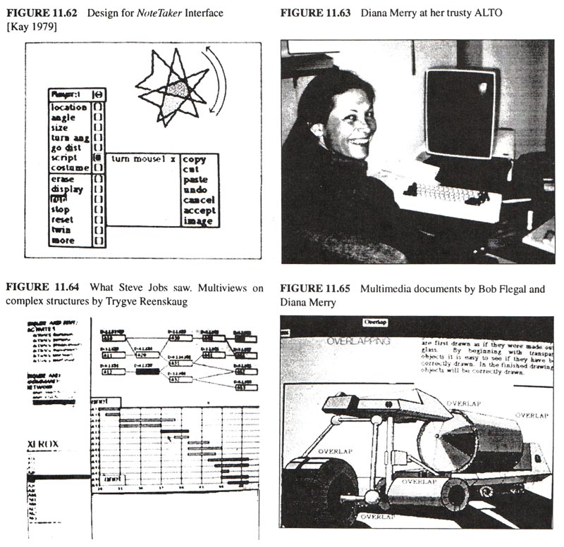We eventually built about 10 of the machines, and though in many senses an engineering success, what had to be done to make them had once again squeezed out the real end-users for whom it was originally aimed. If Xerox (and PARC) as a whole had believed in these smaller scale ideas, we could have put much more silicon muscle behind the dreams and successfully built them in the 70's when they were first possible. It was a bitter disappointment to have to get the wrong kind of CPU from Intel and the wrong kind of display from HP because there was not enough corporate will to take advantage of internal technological expertise.
By now it was already 1979, and we found ourselves doing one of our many demos, but this time for a very interested audience: Steve Jobs, Jef Raskin, and other technical people from Apple. They had started a project called Lisa but weren't quite sure what it should be like, until Jef said to Steve, "You should really come over to PARC and see what they are doing." Thus, more than eight years after overlapping windows had been invented and more than six years after the ALTO started running, the people who could really do something about the ideas, finally got to to see them. The machine used was the Dorado, a very fast "big brother" of the ALTO, whose Smalltalk microcode had been largely written by Bruce Horn, one of our original "Smalltalk kids" who was still only a teen-ager. Larry Tesler gave the main part of the demo with Dan sitting in the copilot's chair and Adele and I watched from the rear. One of the best parts of the demo was when Steve Jobs said he didn't like the blt-style scrolling we were using and asked if we could do it in a smooth continuous style. In less than a minute Dan found the methods involved, made the (relatively major) changes and scrolling was now continuous! This shocked the visitors, especially the programmers among them, as they had never seen a really powerful incremental system before.
Steve tried to get and/or buy the technology from Xerox (which was one of Apple's minority venture capitalists), but Xerox would neither part with it nor would come up with the resources to continue to develop it in house by funding a better NoteTaker cum Smalltalk.
"The greatest sin in Art is not Boredom,
as is commonly supposed, but lack of
Proportion" — Paul Hindemith
As Dan said "the decision not to continue the NoteTaker project added motivation to release Smalltalk widely." But not for me. By this time I was both happy about the cleanliness and elegance of the Smalltalk conception as realized by Dan and the others, and sad that it was farther away than ever from the children—it came to me as a shock that no child had programmed in any Smalltalk since Smalltalk-76 made its debut. Xerox (and PARC) were now into "workstations" as things in themselves—but I still wanted "playstations". The romance of the Dynabook seemed less within grasp, paradoxically just when the various needed technologies were starting to be commercially feasible—some of them, unfortunately, like the flat-screen display, abandoned to the Japanese by the US companies who had invented them. This was a major case of "snatching defeat from the jaws of victory." Larry Tesler decided that Xerox was never going to "get it" and was hired by Steve Jobs in May 1980 to be a principal designer of the Lisa. I agreed, had a sabbatical coming, and took it.
Adele decided to drive the documentation and release process for a new Smalltalk that could be distributed widely almost regardless of the target hardware. Only a few changes had to be made to the NoteTaker Smalltalk-78 to make a releasable system. Perhaps the change that was most ironic was to turn the custom fonts that made Smalltalk more readable (and were a hallmark of the entire PARC culture) back into standard pedestrian ASCII characters. According to Peter Deutsch this "met with heated opposition within the group at the time, but has turned out to be essential for the acceptance of the system in the world." Another change was to make blocks more like lambda expressions which, as Peter Deutsch was to observe nine years later: "In retrospect, this proliferation of different kinds of instantiations and scoping was probably a bad idea." The most puzzling strange idea—at least to me as a new outsider—was the introduction of metaclasses (really just to make instance initialization a little easier—a very minor improvement over what Smalltalk-76 did quite reasonably already). Peter's 1989 comment is typical and true: "metaclasses have proven confusing to many users, and perhaps in the balance more confusing than valuable." In fact, in their PIE system, Goldstein and Bobrow had already implemented in Smalltalk an "observer language", somewhat following the view-oriented approach I had been advocating and in some ways like the "perspectives" proposed in KRL [Goldstein *]. Once one can view an instance via multiple perspectives even "semi-metaclasses" like Class Class and Class Object are not really necessary since the object-role and instance-of-a-class-role are just different views and it is easy to deal with life-history issues including instantiation. This was there for the taking (along with quite a few other good ideas), but it wasn't adopted. My guess is that Smalltalk had moved into the final phase I mentioned at the beginning of this story, in which a way of doing things finally gets canonized into an inflexible belief structure.
One final comment. Hardware is really just software crystallized early. It is there to make program schemes run as efficiently as possible. But far too often the hardware has been presented as a given and it is up to software designers to make it appear reasonable. This has caused low-level techniques and excessive optimization to hold back progress in program design. As Bob Barton used to say: "Systems programmers are high priests of a low cult."
One way to think about progress in software is that a lot of it has been about finding ways to late-bind, then waging campaigns to convince manufacturers to build the ideas into hardware. Early hardware had wired programs and parameters; random access memory was a scheme to late-bind them. Looping and indexing used to be done by address modification in storage; index registers were a way to late-bind. Over the years software designers have found ways to late-bind the locations of computations—this led to base/bounds registers, segment relocation, page MMUs, migratory processes, and so forth. Time-sharing was held back for years because it was "inefficient"— but the manufacturers wouldn't put MMUs on the machines, universities had to do it themselves! Recursion late-binds parameters to procedures, but it took years to get even rudimentary stack mechanisms into CPUs. Most machines still have no support for dynamic allocation and garbage collection and so forth. In short, most hardware designs today are just re-optimizations of moribund architectures.
From the late-binding perspective, OOP can be viewed as a comprehensive technique for late-binding as many things as possible: the mix of state and process in a set of behaviors, where they are located, what they are called, when and why they are invoked, which HW is used, etc., and more subtle, the strategies used in the OOP scheme itself. The art of the wrap is the art of the trap.
Consider the two cases that must be handled efficiently in order to completely wrap objects. It would be terrible if a + b incurred any overhead if a and b were bound, say, to "3" and "4" in a form that could be handled by the ALU. The operations should occur full speed using look-aside logic (in the simplest scheme a single and gate) to trap if the operands aren't compatible with the ALU. Now all elementary operations that have to happen fast have been wrapped without slowing down the machine.
The second case happens if the trap has determined the objects in questions are too complicated for the ALU. Now the HW has to dynamically find a method that can handle the objects. This is very similar to indexing—the class of one of the objects is "indexed" by the desired method-selector in a slightly more general way. In other words the virtual-address of a method is <class><selector>. Since most HW today does a virtual address translation of some kind to find the real address—a trap—it is quite possible to hide the overhead of the OOP dispatch in the MMU overhead that has already been rationalized.
Again, the whole point of OOP is not to have to worry about what is inside an object. Objects made on different machines and with different languages should be able to talk to each other—and will have to in the future. Late-binding here involves trapping incompatibilities into recompatibility methods—a good discussion of some of the issues is found in [Popek 1984].
Staying with the metaphor of late-binding, what further late-binding schemes might we expect to see? One of the nicest late-binding schemes that is being experimented with is the metaobject protocol work at Xerox PARC [Kiczales 1991]. The notion is that the language designer's choice for the internal representation of instances, variables, etc., may not cover what the implementer needs, so within a fixed semantics they allow the implementer to give the system strategies—for example, using a hashed lookup for slots in an instance instead of direct indexing. These are then efficiently compiled and extend the base implementation of the system. This is a direct descendant of similar directions from the past of Simula, FLEX, CDL, Smalltalk, and Actors.
Another late-binding scheme that is already necessary is to get away from direct protocol matching when a new object shows up in a system of objects. In other words, if someone sends you an object from halfway around the world it will be unusual if it conforms to your local protocols. At some point it will be easier to have it carry even more information about itself—enough so its specifications can be "understood" and its configuration into your mix done by the more subtle matching of inference.
A look beyond OOP as we know it today can also be done by thinking about late-binding. Prolog's great idea is that it doesn't need binding to values in order to carry out computations [Col **]. The variable is an object and a web of partial results can be built to be filled in when a binding is finally found. Eurisko [Lenat **] constructs its methods—and modifies its basic strategies—as it tries to solve a problem. Instead of a problem looking for methods, the methods look for problems—and Eurisko looks for the methods of the methods. This has been called "opportunistic programming"—I think of it as a drive for more enlightenment, in which problems get resolved as part of the process.
This higher computational finesse will be needed as the next paradigm shift—that of pervasive networking—takes place over the next five years. Objects will gradually become active agents and will travel the networks in search of useful information and tools for their managers. Objects brought back into a computational environment from halfway around the world will not be able to configure themselves by direct protocol matching as do objects today. Instead, the objects will carry much more information about themselves in a form that permits inferential docking. Some of the ongoing work in specification can be turned to this task [Guttag **][Goguen **].
Tongue in cheek, I once characterized progress in programming languages as kind of "sunspot" theory, in which major advances took place about every 11 years. We started with machine code in 1950, then in 1956 FORTRAN came along as a "better old thing" which if looked at as "almost a new thing" became the precursor of ALGOL-60 in 1961. In 1966, SIMULA was the "better old thing," which if looked at as "almost a new thing" became the precursor of Smalltalk in 1972.
Everything seemed set up to confirm the "theory" once more: in 1978 Eurisko was in place as the "better old thing" that was "almost a new thing". But 1983—and the whole decade—came and went without the "new thing". Of course, such a theory is silly anyway—and yet, I think the enormous commercialization of personal computing has smothered much of the kind of work that used to go on in universities and research labs, by sucking the talented kids towards practical applications. With companies so risk-adverse towards doing their own HW, and the HW companies betraying no real understanding of SW, the result has been a great step backwards in most respects.
A twentieth century problem is that technology has become too "easy". When it was hard to do anything whether good or bad, enough time was taken so that the result was usually good. Now we can make things almost trivially, especially in software, but most of the designs are trivial as well. This is inverse vandalism: the making of things because you can. Couple this to even less sophisticated buyers and you have generated an exploitation marketplace similar to that set up for teenagers. A counter to this is to generate enormous dissatisfaction with one's designs using the entire history of human art as a standard and goal. Then the trick is to decouple the dissatisfaction from self worth—otherwise it is either too depressing or one stops too soon with trivial results.
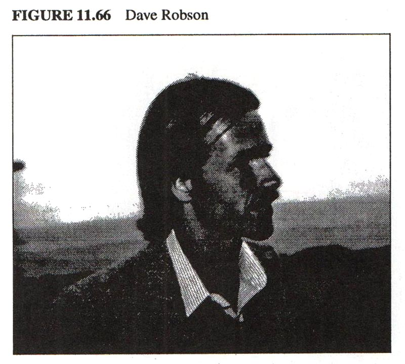I will leave the story of early Smalltalk in 1981 when an extensive series of articles on Smalltalk-80 was published in Byte magazine, [Byte 1981] followed by Adele's and Dave Robson's books [Goldberg 1983] and the official release of the system in 1983. Now programmers could easily implement the virtual machine without having to reinvent it, and, in several cases, groups were able to roll their own image of basic classes. In spite of having to run almost everywhere on moribund HW architectures, Smalltalk has proliferated amazingly well (in part because of tremendous optimization efforts on these machines) [Deutsch 83]. As far as I can tell, it still seems to be the most widely used system that claims to be object-oriented. It is incredible to me that no one since has come up with a qualitatively better idea that is as simple, elegant, easy to program, practical, and comprehensive. (It's a pity that we didn't know about PROLOG then or vice versa, the combinations of the two languages done subsequently are quite intriguing.)
While justly applauding Dan, Adele and the others that made Smalltalk possible, we must wonder at the same time: where are the Dans and the Adeles of the '80s and '90s that will take us to the next stage?
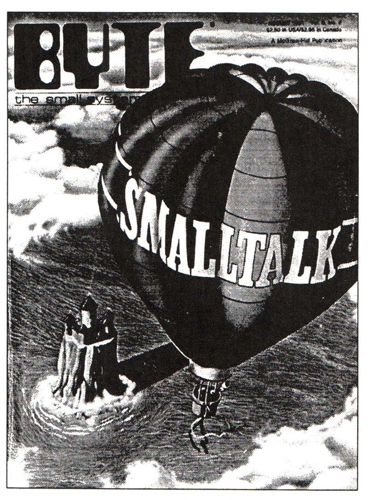